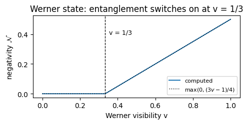
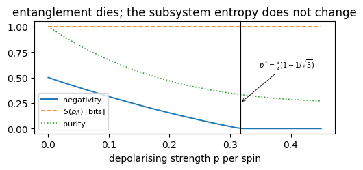
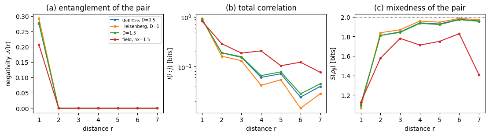
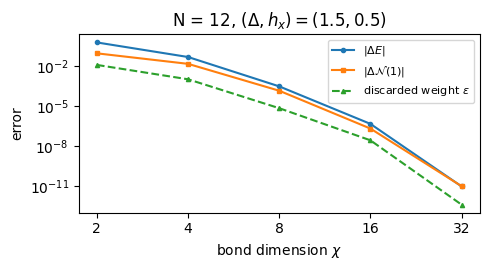

The many-body notebooks of this course computed entanglement entropies and put them to work. The bond dimension a matrix product state needs is set by an entropy; the entanglement barrier that stops a time evolution is an entropy growing in time; the half-chain entropy of the XXZ chain changes character between its phases. None of that asked what a measure of entanglement is, what else can be measured, or what the entropy fails to see.
This notebook organises those questions around one concrete question:
The entropy across a cut distinguishes the phases of the XXZ chain. Does it tell us whether two spins in that chain are entangled with each other?
The answer is no. Two spins taken out of a ground state are in a mixed state, and for mixed states the entropy of a subsystem no longer measures entanglement alone: it also measures classical uncertainty. The notebook therefore has two halves.
Road map. Sections 2 to 4 treat pure states. There the Schmidt spectrum of a cut is the complete answer and the entanglement entropy is the canonical measure; the GHZ and W states show that one number at one cut is still not a classification. Sections 5 to 8 treat mixed states: why the problem is harder, the partial transpose as an axis swap, the PPT criterion and the negativity, calibrated on Werner states and on a Bell pair under depolarising noise. Section 9 follows the negativity, the mutual information and the pair entropy against distance in the XXZ chain, and measures monogamy with the concurrence. Section 10 maps the \((\Delta,h_x)\) phase diagram in both measures. Sections 11 to 13 compute the same quantities from a matrix product state, check them against the exact state vector, and compare costs. Section 14 repeats the map at \(N=32\), where no state vector is available.
Everything here runs on a laptop CPU in double precision.
What you will learn
Physics
why, for a pure state, entanglement across a cut is a property of the Schmidt spectrum, and in what sense the entanglement entropy is the canonical measure (asymptotic conversion into Bell pairs);
why GHZ and W states belong to different classes, measured by their pairwise negativity and concurrence;
why the subsystem entropy fails for mixed states, the entanglement of formation, the PPT criterion and the negativity, and the Werner and noisy-Bell-pair thresholds;
that pairwise entanglement in a spin-chain ground state is confined to neighbours while correlations are not, and what the monogamy inequality of Coffman, Kundu and Wootters says about it.
Numerical methods
the partial transpose as an axis permutation of the density tensor;
the two-site reduced density matrix of a matrix product state, derived leg by leg, and its validation against exact diagonalisation;
convergence in the bond dimension, and the dependence of DMRG on its starting state.
Implementation practice
wrong controls: every check is paired with a case that must fail;
the matrix and tensor forms of a density operator, and the one confusion between them that no code can detect.
25 — entanglement negativity treats the negativity in more depth (bound entanglement, block negativity, dynamics); it is a companion, not a prerequisite.
Conventions. Qubit \(q\) = tensor axis \(q\), counted from \(0\); \(\vert0\rangle\) is the \(+1\) eigenstate of \(Z\). A density tensor of \(N\) qubits has \(N\) ket axes followed by \(N\) bra axes. Hamiltonians are in Pauli convention. All entropies are in bits.
Configuration
Every notebook of this course starts with the same cell. Choose where to run (DEVICE) and the floating-point precision (PRECISION): "double" = float64/complex128 (default, recommended for physics), "single" = float32/complex64 (half the memory, faster on consumer GPUs, but watch the round-off). All code below derives its dtypes from RDTYPE/CDTYPE and its check tolerances from TOL, so nothing else needs to change.
Code
# ==============================================================================# CONFIGURATION -- adapt to your hardware, then run the notebook top to bottom# ==============================================================================DEVICE ="auto"# "auto": use a GPU if JAX finds one, else CPU | "cpu" | "gpu"PRECISION ="double"# "double": float64/complex128 | "single": float32/complex64import osif DEVICE =="cpu": os.environ["JAX_PLATFORMS"] ="cpu"# must be set BEFORE jax is importedimport stringfrom functools import partialimport mathimport numpy as npimport jaximport jax.numpy as jnpfrom jax import lax# Precision is configurable: "double" = float64/complex128 (default; needed for long time evolutions and# tight validation), "single" = float32/complex64 (half the memory, faster on consumer GPUs).# In a notebook PRECISION is defined in the Configuration cell; for this module use the env var QE_PRECISION.PRECISION =globals().get("PRECISION", os.environ.get("QE_PRECISION", "double"))jax.config.update("jax_enable_x64", PRECISION =="double")RDTYPE = jnp.float64 if PRECISION =="double"else jnp.float32 # real dtypeCDTYPE = jnp.complex128 if PRECISION =="double"else jnp.complex64 # complex dtype of all states/operatorsTOL =1e-10if PRECISION =="double"else1e-4# tolerance for sanity checks (asserts)_LETTERS = string.ascii_letters # the 52 einsum index labels a-z, A-Zimport timeimport matplotlib.pyplot as pltif DEVICE =="gpu"and jax.default_backend() =="cpu":print("WARNING: DEVICE='gpu' requested but JAX found no GPU -- running on CPU.")print(f"JAX {jax.__version__} | backend: {jax.default_backend()} | devices: {jax.devices()}")print(f"precision: {PRECISION} -> real {RDTYPE.__name__}, complex {CDTYPE.__name__}, check tolerance TOL={TOL:g}")
JAX 0.11.0 | backend: cpu | devices: [CpuDevice(id=0)]
precision: double -> real float64, complex complex128, check tolerance TOL=1e-10
Engine recap — the simulator primitives used in this notebook (click to expand)
# ==============================================================================# ENGINE RECAP: the functions of quantum_engine.py (SmoQ.jax) used in this notebook.# Each one is derived, with its mathematics and an independent check, in notebook 08b# (Chapter 3), 'Building the quantum simulator engine'.# States are rank-N tensors of shape (2,)*N; every operator acts through ONE einsum.# ==============================================================================# ----------------------------------------------------------------------------# 1. Elementary matrices: Paulis, Clifford generators, rotations# ----------------------------------------------------------------------------I2 = jnp.eye(2, dtype=CDTYPE)X = jnp.array([[0, 1], [1, 0]], dtype=CDTYPE)Y = jnp.array([[0, -1j], [1j, 0]], dtype=CDTYPE)Z = jnp.array([[1, 0], [0, -1]], dtype=CDTYPE)S = jnp.array([[1, 0], [0, 1j]], dtype=CDTYPE) # phase gate, S^2 = ZT = jnp.array([[1, 0], [0, jnp.exp(1j* jnp.pi /4)]], dtype=CDTYPE) # pi/8 gate, T^2 = S (non-Clifford!)XX = jnp.kron(X, X)YY = jnp.kron(Y, Y)ZZ = jnp.kron(Z, Z)# ----------------------------------------------------------------------------# 2. THE core primitive: a k-qubit operator acting on a tensor through ONE einsum# ----------------------------------------------------------------------------def apply_gate(psi, U, qubits):"""Apply a k-qubit operator U to the axes `qubits` of the tensor `psi`. MATH ---- One qubit (k=1), target q: psi'[s_0,..,a,..,s_{N-1}] = sum_b U[a,b] psi[s_0,..,b,..,s_{N-1}] Two qubits (k=2), targets (q1,q2); the 4x4 matrix is reshaped to U[a1,a2,b1,b2]: psi'[.., a1, .., a2, ..] = sum_{b1,b2} U[a1,a2,b1,b2] psi[.., b1, .., b2, ..] This IS the action of (1 x .. x U x .. x 1) -- written without ever building it. EINSUM TRANSLATION (generated automatically below) ------------------ N=3, q=1 : "db,abc->adc" d = new (output) index of qubit 1 N=4, q=(1,3) : "efbd,abcd->aecf" e,f = new indices of qubits 1 and 3 Recipe: label the axes of psi with letters a,b,c,...; give every target qubit a NEW letter (the next unused ones); U carries (new letters)+(old letters of the targets); the output is psi's labels with the target letters replaced by the new ones. IMPLEMENTATION NOTES -------------------- * reshape of U: (2^k,2^k) -> (2,)*2k. Row index = (a1..ak), column = (b1..bk), and the FIRST qubit in `qubits` is the most significant bit of the small matrix, i.e. it corresponds to the LEFT factor of kron(A,B). * `qubits` may be any distinct axes in any order: non-neighbouring gates cost the same. * U need not be unitary: projectors, Kraus operators and Hamiltonian terms reuse this. * psi may be ANY tensor with those axes of size 2: a state (rank N), a density tensor (rank 2N: ket axes 0..N-1, bra axes N..2N-1), ... COST O(2^k * 2^N) operations, O(2^N) memory (dense matrix: O(4^N) both). JAX `qubits` must be static Python ints (they define the einsum string); psi and U are traced, so the function can sit inside jit / grad / vmap / scan. """ qubits =tuple(int(q) for q in qubits) k, n =len(qubits), psi.ndim U = jnp.asarray(U, dtype=psi.dtype).reshape((2,) * (2* k)) # matrix -> rank-2k tensor inp =list(_LETTERS[:n]) # labels of psi's axes new = _LETTERS[n:n + k] # fresh labels for the outputs out = inp.copy()for a, q inzip(new, qubits): out[q] = a # target axes get the new labels sub =f"{''.join(new)}{''.join(inp[q] for q in qubits)},{''.join(inp)}->{''.join(out)}"return jnp.einsum(sub, U, psi)def apply_kraus_dm(rho, kraus, qubits):"""Quantum channel in Kraus form: rho -> sum_m K_m rho K_m^dagger, sum_m K_m^dag K_m = 1. EINSUM TRANSLATION (N=2, channel on qubit 0; g = Kraus index, summed!) "gea,gfc,abcd->ebfd" with operands K, K^*, rho [a=ket0, b=ket1, c=bra0, d=bra1; e, f = new ket0, bra0] All Kraus branches are summed INSIDE one einsum -- no Python loop over m. `kraus` has shape (M, 2^k, 2^k). """ qubits =tuple(int(q) for q in qubits) k, N =len(qubits), rho.ndim //2 K = jnp.asarray(kraus, dtype=rho.dtype).reshape((-1,) + (2,) * (2* k)) n = rho.ndim inp =list(_LETTERS[:n]) new_k, new_b, m = _LETTERS[n:n + k], _LETTERS[n + k:n +2* k], _LETTERS[n +2* k] out = inp.copy()for a, b, q inzip(new_k, new_b, qubits): out[q], out[N + q] = a, b ket_old ="".join(inp[q] for q in qubits) bra_old ="".join(inp[N + q] for q in qubits) sub =f"{m}{new_k}{ket_old},{m}{new_b}{bra_old},{''.join(inp)}->{''.join(out)}"return jnp.einsum(sub, K, jnp.conj(K), rho)# ----------------------------------------------------------------------------# 3. State preparation# ----------------------------------------------------------------------------_KETS = {"0": [1, 0], "1": [0, 1], "+": [1, 1], "-": [1, -1], "r": [1, 1j], "l": [1, -1j]}def product_state(spec):"""Product state from a string, one character per qubit: product_state('01+-') = |0>|1>|+>|->. ('r','l' = the +1/-1 eigenstates of Y.) MATH psi[s_0,...,s_{N-1}] = v0[s_0] v1[s_1] ... v_{N-1}[s_{N-1}] EINSUM an outer product = einsum with NO summed index: "a,b,c->abc". A product state needs only 2N numbers; entanglement is what makes all 2^N necessary. """ vecs = [jnp.array(_KETS[c], dtype=CDTYPE) / jnp.linalg.norm(jnp.array(_KETS[c], dtype=CDTYPE))for c in spec] n =len(vecs) sub =",".join(_LETTERS[i] for i inrange(n)) +"->"+ _LETTERS[:n]return jnp.einsum(sub, *vecs)def ghz_state(N):"""GHZ state (|0...0> + |1...1>)/sqrt(2): two non-zero entries of the rank-N tensor.""" psi = jnp.zeros((2,) * N, dtype=CDTYPE)return psi.at[(0,) * N].set(1/ jnp.sqrt(2.0)).at[(1,) * N].set(1/ jnp.sqrt(2.0))def dicke_state(N, k):"""Symmetric Dicke state |D_N^k>: equal superposition of all basis states with exactly k ones. Implementation: mask of the flat indices with popcount == k, normalised by sqrt(binom(N,k)).""" idx = np.arange(2** N) pop = np.array([bin(i).count("1") for i in idx]) v = (pop == k).astype(np.complex128)return jnp.asarray(v / np.linalg.norm(v), dtype=CDTYPE).reshape((2,) * N)def w_state(N):"""W state = Dicke state with one excitation: (|10..0> + |01..0> + ... + |0..01>)/sqrt(N)."""return dicke_state(N, 1)def haar_state(key, N):"""Haar-random pure state: a complex Gaussian vector, normalised. (The Gaussian measure is unitarily invariant, so the direction is uniformly distributed.) `key` is an explicit JAX PRNG key -- same key, same state: reproducible science.""" k1, k2 = jax.random.split(key) v = jax.random.normal(k1, (2,) * N) +1j* jax.random.normal(k2, (2,) * N)return (v / jnp.linalg.norm(v)).astype(CDTYPE)def to_dm(psi):"""Pure state -> density TENSOR rho[s..; s'..] = psi[s..] psi^*[s'..] (rank 2N). An outer product: einsum "ab,AB->abAB" -- here via the equivalent tensordot(axes=0)."""return jnp.tensordot(psi, jnp.conj(psi), axes=0)def dm_matrix(rho):"""View a rank-2N density tensor as an ordinary 2^N x 2^N matrix (a reshape, no copy of meaning).""" d =int(round(np.sqrt(rho.size)))return rho.reshape(d, d)# ----------------------------------------------------------------------------# 4. Reduced density matrices & observables (matrix-free)# ----------------------------------------------------------------------------def rdm(psi, keep):"""Reduced density matrix of the qubits `keep` from a PURE state: rho_A = Tr_B |psi><psi|. MATH rho_A[a, a'] = sum_{b} psi[a, b] psi^*[a', b] (a: indices of A, b: of the rest B) EINSUM TRANSLATION N=3, keep=(0,): "abc,Abc->aA" with operands psi, psi^* * letters of B (b,c) appear in BOTH operands and not in the output -> summed = traced out * the kept axis gets a different letter in the second operand -> stays open (a and A) The full |psi><psi| (4^N numbers) is never formed; cost O(2^N 2^|A|). Returns a (2^|A|, 2^|A|) matrix with row/column order following `keep`. """ keep =tuple(int(q) for q in keep) n, k = psi.ndim, len(keep) a =list(_LETTERS[:n]) b = a.copy()for new, q inzip(_LETTERS[n:n + k], keep): b[q] = new sub =f"{''.join(a)},{''.join(b)}->{''.join(a[q] for q in keep)}{''.join(b[q] for q in keep)}"return jnp.einsum(sub, psi, jnp.conj(psi)).reshape(2** k, 2** k)def rdm_dm(rho, keep):"""Partial trace of a density TENSOR (rank 2N), keeping the qubits `keep`. MATH rho_A[a,a'] = sum_b rho[a,b ; a',b] EINSUM N=2, keep=(0,): "abAb->aA" -- the letter b is REPEATED inside one operand and absent from the output: that is a trace over that pair of axes. """ keep =tuple(int(q) for q in keep) N = rho.ndim //2 ket =list(_LETTERS[:N]) bra = [(_LETTERS[N + q] if q in keep else ket[q]) for q inrange(N)] sub =f"{''.join(ket)}{''.join(bra)}->{''.join(ket[q] for q in keep)}{''.join(bra[q] for q in keep)}"return jnp.einsum(sub, rho).reshape(2**len(keep), 2**len(keep))# ----------------------------------------------------------------------------# 5. State characteristics: entropies, fidelity, negativity# ----------------------------------------------------------------------------def purity(rho_mat):"""Tr(rho^2): 1 for pure states, 1/d for the maximally mixed state in dimension d."""return jnp.real(jnp.trace(rho_mat @ rho_mat))def von_neumann_entropy(rho_mat, base=2.0):"""S(rho) = -Tr(rho log rho) = -sum_i lambda_i log lambda_i (in bits for base=2). Eigenvalues are clipped at 1e-16 because 0*log(0) := 0 but log(0) = -inf numerically.""" lam = jnp.clip(jnp.linalg.eigvalsh(rho_mat), 1e-16, None)return-jnp.sum(lam * jnp.log(lam)) / jnp.log(base)def schmidt_values(psi, subsystem):"""Schmidt coefficients of the bipartition A|B with A = `subsystem`. MATH Group the tensor axes into a matrix M[(a),(b)] = psi[a,b] of shape (2^|A|, 2^|B|). Its SVD M = U diag(lambda) V^dag IS the Schmidt decomposition |psi> = sum_k lambda_k |u_k>_A |v_k>_B , rho_A has eigenvalues lambda_k^2. IMPLEMENTATION transpose (A axes first) -> reshape -> svd. No density matrix needed. """ A =tuple(int(q) for q in subsystem) B =tuple(q for q inrange(psi.ndim) if q notin A) M = jnp.transpose(psi, A + B).reshape(2**len(A), -1)return jnp.linalg.svd(M, compute_uv=False)def entanglement_entropy(psi, subsystem, base=2.0):"""Entanglement entropy S_A = -sum_k p_k log p_k with p_k = lambda_k^2 (squared Schmidt values). Product state: 0. Bell/GHZ across any cut: 1 bit. Random state: ~ |A| - 1/(2 ln2) 2^{|A|-|B|} (Page).""" p = jnp.clip(schmidt_values(psi, subsystem) **2, 1e-16, None)return-jnp.sum(p * jnp.log(p)) / jnp.log(base)def as_dm_tensor(rho):"""Accept a density matrix in EITHER form and return the rank-2N tensor (2,)*2N. Both conventions are in use: `rdm` and `dm_matrix` return a (2^N, 2^N) MATRIX, while `to_dm` and the channel functions work with the rank-2N TENSOR (N ket axes, then N bra axes). A (2^N, 2^N) matrix with N > 1 is unambiguous, because a density tensor has every axis of length 2. Passing the matrix form straight to `partial_transpose` used to transpose the WHOLE matrix, which leaves the eigenvalues alone and silently reports zero negativity -- hence this conversion. """ rho = jnp.asarray(rho)if rho.ndim ==2and rho.shape[0] >2: # (2^N, 2^N) matrix with N > 1 d = rho.shape[0] N =int(round(math.log2(d)))if2** N != d:raiseValueError(f"density matrix of dimension {d} is not a power of two")return rho.reshape((2,) * (2* N))ifany(s !=2for s in rho.shape) or rho.ndim %2:raiseValueError(f"not a density matrix or density tensor: shape {rho.shape}")return rhodef partial_transpose(rho, qubits):"""Partial transpose on subsystem A = `qubits`, for a density tensor OR a (2^N, 2^N) matrix. In tensor form it is trivial: SWAP the ket axis q with the bra axis N+q for q in A. (With a 2^N x 2^N matrix this requires painful index gymnastics -- here: one `transpose`.) RETURNS the rank-2N tensor; wrap in `dm_matrix` for the matrix form.""" rho = as_dm_tensor(rho) N = rho.ndim //2 perm =list(range(2* N))for q in qubits: perm[q], perm[N + q] = perm[N + q], perm[q]return jnp.transpose(rho, perm)def negativity(rho, qubits):"""Entanglement negativity (Peres-Horodecki / PPT criterion). N(rho) = (||rho^{T_A}||_1 - 1)/2 = sum of |negative eigenvalues| of the partial transpose, E_N = log2 ||rho^{T_A}||_1 = log2(2N+1) (logarithmic negativity). N > 0 => entangled (for 2x2 and 2x3 systems also <=). Returns (N, E_N).""" lam = jnp.linalg.eigvalsh(dm_matrix(partial_transpose(rho, qubits))) neg = jnp.sum(jnp.abs(lam) - lam) /2return neg, jnp.log2(2* neg +1)# ----------------------------------------------------------------------------# 7. Noise channels (Kraus operators): density matrix and quantum-trajectory forms# ----------------------------------------------------------------------------def kraus_depolarizing(p):"""Depolarising channel rho -> (1-p) rho + (p/3)(X rho X + Y rho Y + Z rho Z). Kraus: sqrt(1-p) 1, sqrt(p/3) X, sqrt(p/3) Y, sqrt(p/3) Z. Bloch vector shrinks by 1 - 4p/3."""return jnp.stack([jnp.sqrt(1- p) * I2, jnp.sqrt(p /3) * X, jnp.sqrt(p /3) * Y, jnp.sqrt(p /3) * Z])# ----------------------------------------------------------------------------# 8. Hamiltonians as lists of local terms; H|psi> matrix-free# ----------------------------------------------------------------------------def heisenberg_terms(N, Jxx=1.0, Jyy=1.0, Jzz=1.0, hx=0.0, hy=0.0, hz=0.0, periodic=False, bonds=None):"""Spin-1/2 Hamiltonian in Pauli convention H = sum_<ij> (Jxx X_i X_j + Jyy Y_i Y_j + Jzz Z_i Z_j) + sum_i (hx X_i + hy Y_i + hz Z_i) returned as a LIST of local terms [(qubits, small_matrix), ...] -- this list *is* our Hamiltonian. Heisenberg: Jxx=Jyy=Jzz XXZ: Jxx=Jyy!=Jzz XY: Jzz=0 TFIM: only Jzz and hx. `bonds` overrides the default open chain (any graph: ladders, 2D lattices, all-to-all, ...)."""if bonds isNone: bonds = [(i, i +1) for i inrange(N -1)] + ([(N -1, 0)] if periodic and N >2else []) terms = [((i, j), Jxx * XX + Jyy * YY + Jzz * ZZ) for (i, j) in bonds]if hx !=0or hy !=0or hz !=0: terms += [((i,), hx * X + hy * Y + hz * Z) for i inrange(N)]return termsdef apply_hamiltonian(terms, psi):"""H|psi> = sum_k h_k|psi>, every term applied with `apply_gate` (h_k is Hermitian, not unitary -- the einsum does not care). Cost O(#terms * 2^N). This matrix-vector product is ALL that Lanczos, Chebyshev and Krylov methods need, which is why they scale to N ~ 25-30.""" out = jnp.zeros_like(psi)for qubits, h in terms: out = out + apply_gate(psi, h, qubits)return out# ----------------------------------------------------------------------------# 9. Time evolution: TEBD / Trotter-Suzuki, Chebyshev, Krylov, exact# ----------------------------------------------------------------------------def lanczos(matvec, v0, m=60, reorth=True):"""m-step Lanczos iteration: orthonormal basis V of the Krylov space span{v, Hv, H^2 v, ...} in which H is TRIDIAGONAL: T = V^dag H V = tridiag(beta, alpha, beta). Recurrence w = H v_j - alpha_j v_j - beta_{j-1} v_{j-1}, alpha_j = <v_j|H|v_j>, beta_j = ||w||. `reorth=True` re-orthogonalises against all previous vectors (cures the loss of orthogonality of floating-point Lanczos at the price of O(m^2) inner products). Only `matvec` (H|psi>) is needed -> matrix-free. Returns (alphas, betas, V[m, 2,..,2]). """ v = v0 / jnp.linalg.norm(v0) V, alphas, betas = [v], [], [] w = matvec(v)for j inrange(m): a = jnp.real(jnp.vdot(V[j], w)) alphas.append(a) w = w - a * V[j] - (betas[-1] * V[j -1] if j >0else0.0)if reorth:for u in V: w = w - jnp.vdot(u, w) * u b = jnp.linalg.norm(w)if j == m -1orfloat(b) <1e-12:break betas.append(b) V.append(w / b) w = matvec(V[-1])return np.array(alphas, dtype=float), np.array(betas, dtype=float), jnp.stack(V)def lanczos_ground_state(terms, N, m=80, key=None, restarts=3):"""Ground state (E_0, |psi_0>) from restarted Lanczos: diagonalise the small T, map its lowest eigenvector back with V, use it as the next start vector. Extremal eigenvalues converge first.""" key = jax.random.PRNGKey(0) if key isNoneelse key v = haar_state(key, N) mv = jax.jit(lambda p: apply_hamiltonian(terms, p)) E =Nonefor _ inrange(restarts): a, b, V = lanczos(mv, v, m) w, S_ = np.linalg.eigh(np.diag(a) + np.diag(b, 1) + np.diag(b, -1)) v = jnp.tensordot(jnp.asarray(S_[:, 0], dtype=CDTYPE), V, axes=1) v = v / jnp.linalg.norm(v) E = w[0]returnfloat(E), v# ----------------------------------------------------------------------------# 12. Random unitaries, Clifford group, brick-wall circuits# ----------------------------------------------------------------------------def haar_unitary(key, d):"""Haar-random d x d unitary (Mezzadri's recipe): QR-decompose a complex Ginibre matrix and fix the phases of R's diagonal -- without the phase fix the distribution is NOT Haar.""" k1, k2 = jax.random.split(key) G = (jax.random.normal(k1, (d, d)) +1j* jax.random.normal(k2, (d, d))) / jnp.sqrt(2.0) Q, R = jnp.linalg.qr(G) ph = jnp.diagonal(R) / jnp.abs(jnp.diagonal(R))return Q * ph[None, :]# ----------------------------------------------------------------------------# 15. Variational circuits: ansatz, gradients, optimizers# ----------------------------------------------------------------------------_SPIN_MPS = {"0": [1, 0], "1": [0, 1], "+": [1, 1], "-": [1, -1]} # same characters as product_stateLAM_CUT =100*float(jnp.finfo(RDTYPE).eps) # Schmidt values below this are paddingdef product_mps(spec, chi):"""Product state |spec[0]> |spec[1]> ... as a padded MPS (B[N,chi,2,chi], lam[N+1,chi]). MATH B[j][0, s, 0] = v_j[s], all other entries zero; every cut has the single Schmidt value 1. '0' = spin up (Z=+1), '1' = spin down (Z=-1), '+'/'-' = eigenstates of X.""" N =len(spec) B = np.zeros((N, chi, 2, chi), dtype=complex)for j, c inenumerate(spec): v = np.array(_SPIN_MPS[c], dtype=complex) B[j, 0, :, 0] = v / np.linalg.norm(v) lam = np.zeros((N +1, chi)) lam[:, 0] =1.0return jnp.asarray(B, dtype=CDTYPE), jnp.asarray(lam, dtype=RDTYPE)def mps_entropies(lam):"""Entanglement entropy (bits) of every cut, directly from the stored Schmidt values: S_j = -sum_k lam[j,k]^2 log2 lam[j,k]^2 (0 log 0 := 0 handles the zero padding).""" p = lam **2return-jnp.sum(jnp.where(p >0, p * jnp.log2(jnp.where(p >0, p, 1.0)), 0.0), axis=1)def xxz_mpo(N, Jxx=1.0, Jyy=1.0, Jzz=1.0, hx=0.0, hz=0.0):"""MPO of H = sum_i (Jxx X X + Jyy Y Y + Jzz Z Z)_{i,i+1} + sum_i (hx X_i + hz Z_i), open chain, Pauli convention. RETURNS W of shape (N, D, D, 2, 2), D = 5: W[j, v, w, s_out, s_in] = the operator at site j for the move v -> w. States of the finite-state machine: 4 = nothing placed, 1/2/3 = X/Y/Z placed on the previous site, 0 = complete. Site 0 keeps only row 4 and site N-1 only column 0 (all other entries zero), so all sites have the same shape. CONVENTION (used by every MPO routine: mpo_to_dense, mpo_expectation, boundary_environments, dmrg) the START state of the machine is the LAST index D-1 and the END state is index 0, for any D. """ D =5 W = jnp.zeros((D, D, 2, 2), dtype=CDTYPE) W = W.at[0, 0].set(I2).at[4, 4].set(I2) # stay: identities W = W.at[1, 0].set(X).at[2, 0].set(Y).at[3, 0].set(Z) # second half of a bond -> complete W = W.at[4, 1].set(Jxx * X).at[4, 2].set(Jyy * Y).at[4, 3].set(Jzz * Z) # first half of a bond W = W.at[4, 0].set(hx * X + hz * Z) # a single-site term, complete at once Ws = jnp.stack([W] * N) Ws = Ws.at[0].set(jnp.zeros_like(W).at[4].set(W[4])) # left boundary: only row 4 Ws = Ws.at[N -1].set(jnp.zeros_like(W).at[:, 0].set(W[:, 0])) # right boundary: only column 0return Wsdef left_env_update(L, A, W):"""L_{j+1}[b,w,b'] = sum L_j[a,v,a'] A[a,s,b] W[v,w,t,s] conj(A)[a',t,b'] Eq. (12). Letters a v x = L_j (x = a', the bra bond); a s b = A (ket); v w t s = W (t = s_out, s = s_in); x t c = conj(A) (bra, c = b'). The BRA tensor carries the OUTPUT leg of W, because <psi|H|psi> = sum conj(A) (W A). """return jnp.einsum("avx,asb,vwts,xtc->bwc", L, A, W, jnp.conj(A))def right_env_update(R, B, W):"""R_j[a,v,a'] = sum B[a,s,b] W[v,w,t,s] conj(B)[a',t,b'] R_{j+1}[b,w,b'] Eq. (13). Letters a s b = B (ket); v w t s = W (t = s_out, s = s_in); x t c = conj(B) (bra, x = a', c = b'); b w c = R_{j+1}. """return jnp.einsum("asb,vwts,xtc,bwc->avx", B, W, jnp.conj(B), R)def boundary_environments(chi, D):"""L_0 and R_N in the padded format (chi, D, chi): L_0[0, D-1, 0] = 1 (nothing placed), R_N[0, 0, 0] = 1 (complete).""" L0 = jnp.zeros((chi, D, chi), dtype=CDTYPE).at[0, D -1, 0].set(1.0) RN = jnp.zeros((chi, D, chi), dtype=CDTYPE).at[0, 0, 0].set(1.0)return L0, RNdef heff_apply(L, W1, W2, R, theta):"""(H_eff theta)[a',s',t',b'] = sum L[a,v,a'] W1[v,w,s',s] W2[w,u,t',t] R[b,u,b'] theta[a,s,t,b] Eq. (14). Letters: a v x = L (x = a'), v w y s = W1 (y = s'), w u z t = W2 (z = t'), b u q = R (q = b'), a s t b = theta. COST O(chi^3 D d^2) with the contraction order chosen by optimize="optimal"; the (4 chi^2)^2 matrix is never formed."""return jnp.einsum("avx,vwys,wuzt,buq,astb->xyzq", L, W1, W2, R, theta, optimize="optimal")def lanczos_lowest(matvec, v0, m, mask=None, key=None):"""Lowest eigenpair (E, x) of a Hermitian operator given only matvec, from m Lanczos steps started at v0. MATH beta_j v_{j+1} = H v_j - alpha_j v_j - beta_{j-1} v_{j-1} (notebook 11), full reorthogonalisation (twice); Ritz vector x = sum_j s_j v_j of the lowest eigenvector s of the tridiagonal T. BREAKDOWN beta_j <= 1e-12 ||H||, with ||H|| estimated by the largest ||H v_j|| seen (a RELATIVE test: the rounding residual of an exhausted Krylov space grows with ||H||). The Krylov space K is then invariant, but it need not contain the lowest eigenvector (v0 orthogonal to it, e.g. v0 an eigenvector or in another symmetry sector). Lanczos therefore RESTARTS from a random vector of the allowed space (`mask`), orthogonalised against K, and writes beta_j = 0 into T: T becomes block diagonal and every Ritz value belongs to H. Only if nothing is left (the whole allowed space is exhausted) do the remaining rows of T get a diagonal far above the spectrum, so that their spurious eigenvalues cannot be the lowest. ARGUMENTS mask (shape of v0, 0/1, optional): the subspace H acts on; the restart vectors are drawn inside it. key: PRNG key of the restart vectors (default PRNGKey(0): deterministic). """ shape = v0.shape v0 = (v0 / jnp.linalg.norm(v0)).reshape(-1) mask = jnp.ones(v0.size, dtype=RDTYPE) if mask isNoneelse jnp.asarray(mask, dtype=RDTYPE).reshape(-1) key = jax.random.PRNGKey(0) if key isNoneelse key V0 = jnp.zeros((m, v0.size), dtype=v0.dtype).at[0].set(v0)def orthogonalise(w, V): # w <- w - sum_i v_i <v_i|w>, twice (rounding); V holds the v_i as ROWS w = w - jnp.conj(V @ jnp.conj(w)) @ Vreturn w - jnp.conj(V @ jnp.conj(w)) @ Vdef body(carry, j): V, v, v_prev, beta_prev, alive, hnorm = carry Hv = matvec(v.reshape(shape)).reshape(-1) hnorm = jnp.maximum(hnorm, jnp.linalg.norm(Hv)) # lower bound of ||H||: the scale of the breakdown test alpha = jnp.real(jnp.vdot(v, Hv)) w = orthogonalise(Hv - alpha * v - beta_prev * v_prev, V) beta = jnp.linalg.norm(w) cont = beta >1e-12* hnorm # False: breakdown, K is an invariant subspacedef restart(_): # random vector of the allowed space, orthogonal to K r = mask * jax.random.normal(jax.random.fold_in(key, j), (v.size,), dtype=RDTYPE) r = orthogonalise(r.astype(V.dtype), V) rn = jnp.linalg.norm(r) fresh = rn >1e-8* jnp.sqrt(jnp.sum(mask)) # False: the allowed space is exhaustedreturn r / jnp.where(fresh, rn, 1.0), fresh v_next, fresh = lax.cond(cont, lambda _: (w / jnp.where(cont, beta, 1.0), jnp.array(True)), restart, None) v_next = jnp.where(alive & (cont | fresh), v_next, 0.0) b_out = jnp.where(alive & cont, beta, 0.0) # a restart decouples the new block: T_{j,j+1} = 0 V = V.at[j +1].set(v_next, mode="drop") # at j = m-1 the index j+1 is out of range; "drop" discards that writereturn (V, v_next, v, b_out, alive & (cont | fresh), hnorm), (alpha, b_out, alive) init = (V0, v0, jnp.zeros_like(v0), jnp.zeros((), dtype=RDTYPE), jnp.array(True), jnp.zeros((), dtype=RDTYPE)) (V, _, _, _, _, hnorm), (alphas, betas, used) = lax.scan(body, init, jnp.arange(m)) alphas = jnp.where(used, alphas, 1e3* (1.0+ hnorm)) # unused rows of T: far above every Ritz value evals_T, evecs_T = jnp.linalg.eigh(jnp.diag(alphas) + jnp.diag(betas[:-1], 1) + jnp.diag(betas[:-1], -1)) # Ritz values and vectors of T x = evecs_T[:, 0].astype(V.dtype) @ V # Ritz vector of the lowest Ritz value, in the big spacereturn evals_T[0], (x / jnp.linalg.norm(x)).reshape(shape)def split_two_site(theta, chi, move_right, support=None):"""theta[a,s,t,b] (padded, shape (chi,2,2,chi)) -> two tensors (chi,2,chi), Schmidt values, discarded weight. MATH theta_{(as),(tb)} = U S V^dag, keep chi values: S <- S[:chi]/||S[:chi]||, eps = sum_{k>=chi} S_k^2 / sum_k S_k^2 move_right: left = U (left-canonical), right = S V^dag (carries the centre) move_left : left = U S (carries centre), right = V^dag (right-canonical) COMPLETION The columns of U (move_right) or rows of V^dag (move_left) whose Schmidt value vanishes (< LAM_CUT) are replaced by an orthonormal completion INSIDE the space of genuine block states, P = {(a,s): support[a]} (move_right) or {(t,b): support[b]} (move_left): the orthonormal basis of (1 - U_k U_k^dag) P. These directions carry weight zero now; a later step can give them weight, which is how the bond dimension grows faster than the factor 2 per half sweep allowed by the Schmidt rank alone. Columns beyond dim P are EXACT zeros. The completion that LAPACK returns would mix in padded (zero-norm) block "states"; H_eff, which assumes orthonormal block bases, then has a spurious eigenvalue 0 on them (see dmrg). ARGUMENTS chi must equal theta.shape[0] (the storage size): the routine always keeps exactly chi of the 2*chi values. support (chi,) bool: the bond indices of the outer bond (a for move_right, b for move_left) that are block states (the others are padding); default: all. """ U, S, Vh = jnp.linalg.svd(theta.reshape(2* chi, 2* chi), full_matrices=False) weight = S **2 eps = jnp.sum(weight[chi:]) / jnp.sum(weight) S = S[:chi] / jnp.sqrt(jnp.sum(weight[:chi])) keep = S > LAM_CUT # a prefix: S is sorted S = jnp.where(keep, S, 0.0) support = jnp.ones(chi, dtype=bool) if support isNoneelse supportif move_right: Q, p = U[:, :chi], jnp.repeat(support, 2) # isometry U: rows (a, s), allowed rows support[a]else: Q, p = jnp.conj(Vh[:chi]).T, jnp.tile(support, 2) # isometry V: rows (t, b), allowed rows support[b] p = p.astype(Q.dtype) Qk = Q * keep[None, :] * p[:, None] # kept vectors (exactly zero outside P) C = jnp.diag(p) - Qk @ (jnp.conj(Qk).T * p[None, :]) # (1 - Qk Qk^dag) P: its range is the completion space Uc, sc, _ = jnp.linalg.svd(C) Uc = Uc * (sc >0.5)[None, :] # singular values are 1 (completion) or 0 (nothing): drop the 0s r = jnp.sum(keep) fill = jnp.take(Uc, jnp.clip(jnp.arange(chi) - r, 0, 2* chi -1), axis=1) # completion vector k - r into column k >= r Q = jnp.where(keep[None, :], Qk, fill)if move_right:return Q.reshape(chi, 2, chi), (S[:, None] * Vh[:chi] * keep[:, None]).reshape(chi, 2, chi), S, epsreturn (U[:, :chi] * S[None, :]).reshape(chi, 2, chi), jnp.conj(Q).T.reshape(chi, 2, chi), S, eps_LOCAL_STEP_CACHE = {} # one XLA compilation per (chi, m, direction)def make_local_step(chi, m, move_right):"""Compiled DMRG step on the bond (j, j+1): contract, solve H_eff theta = E theta (Lanczos, m steps), split. The compiled step depends only on (chi, m, direction) -- never on the site, the Hamiltonian or the field -- so it is built once and cached. Without the cache every call of `dmrg`, hence every point of a parameter scan, pays a fresh XLA compilation, which dominates the run time although the arithmetic is identical.""" key = (chi, m, move_right)if key in _LOCAL_STEP_CACHE:return _LOCAL_STEP_CACHE[key]@jax.jitdef step(L, W1, W2, R, M1, M2): theta = jnp.einsum("asm,mtb->astb", M1, M2) # 1. two-site tensor used_L, used_R = jnp.any(L !=0, axis=(0, 1)), jnp.any(R !=0, axis=(0, 1)) # bond indices that are block states mask = used_L[:, None, None, None] & used_R[None, None, None, :] & jnp.ones(theta.shape, dtype=bool) E, theta = lanczos_lowest(lambda t: heff_apply(L, W1, W2, R, t), theta, m, mask) # 2. local ground state left, right, S, eps = split_two_site(theta, chi, move_right, used_L if move_right else used_R) # 3. split, move the centrereturn left, right, S, eps, E _LOCAL_STEP_CACHE[key] = stepreturn stepdef mps_recanonicalise(B):"""Exact right-canonical form and the TRUE Schmidt values of every cut, for a padded MPS whose site 0 carries the norm. MATH Left sweep j = 0..N-2: A[j]_{(a s), b} = Q R (QR); A[j] <- Q (left-canonical); A[j+1] <- R A[j+1]. After it, sites 0..N-2 are left-canonical and the whole norm sits on site N-1. Right sweep j = N-1..1: A[j]_{a, (s b)} = U S V^dag (SVD); B[j] <- V^dag; lam[j] <- S; A[j-1] <- A[j-1] U S. At step j everything left of the cut is left-canonical and everything right of it right-canonical, so S are exactly the Schmidt values of the cut left of site j (no stored value from an earlier, different state). No truncation can occur: every matrix has rank <= chi, and all chi values are kept. lam[0] = lam[N] = (1,0,..). Singular values below LAM_CUT * S_max (rounding zeros) are set to exact zero with their rows of V^dag, so that the padding of the returned tensors is exactly zero (the completion LAPACK returns there is arbitrary). WHY `dmrg` records lam[j] at the split of bond j during the right-to-left half sweep; the later steps at bonds j-1, ..., 1 change the left block of that cut, so the recorded values describe an intermediate state. Likewise `state_to_mps` with truncation stores lam[j] before cut j-1 is truncated. This pass makes (B, lam) consistent, so that the lam-based observables (mps_expect_sites, mps_expect_bonds, mps_entropies, mps_correlator) are those of the state that B encodes. The state itself is unchanged (to rounding). ARGUMENTS B (N, chi, 2, chi) any padded MPS whose left boundary leg is index 0 and right boundary leg index 0. RETURNS B (N, chi, 2, chi) right-canonical on sites 1..N-1 (site 0 = centre, holds the norm), lam (N+1, chi). COST N QR and N SVD of (2chi x chi) matrices: O(N chi^3). """ N, chi = B.shape[0], B.shape[1] A =list(B)for j inrange(N -1): # left sweep: QR, push R to the right Q, R = jnp.linalg.qr(A[j].reshape(chi *2, chi)) A[j] = Q.reshape(chi, 2, chi) A[j +1] = jnp.einsum("ab,bsc->asc", R, A[j +1]) lam = jnp.zeros((N +1, chi), dtype=RDTYPE).at[0, 0].set(1.0).at[N, 0].set(1.0)for j inrange(N -1, 0, -1): # right sweep: SVD, push U S to the left U, S, Vh = jnp.linalg.svd(A[j].reshape(chi, 2* chi), full_matrices=False) keep = S > LAM_CUT * S[0] # beyond the rank: exact zeros (see split_two_site) S, Vh = jnp.where(keep, S, 0.0), Vh * keep[:, None] A[j] = Vh.reshape(chi, 2, chi) lam = lam.at[j].set(S.astype(RDTYPE)) A[j -1] = jnp.einsum("asb,bc->asc", A[j -1], U * S[None, :].astype(U.dtype)) A[0] = A[0].at[1:].set(0.0) # unused rows of the dummy left bond: exactly zeroreturn jnp.stack(A), lamdef dmrg(W, M, chi, n_sweeps, m=20, trace=False):"""Two-site DMRG for the MPO W (N, D, D, 2, 2), starting from the padded MPS M (N, chi, 2, chi). RETURNS B (N, chi, 2, chi) right-canonical, lam (N+1, chi) Schmidt values of all bonds, history list of (sweep, direction, bond j, energy, discarded weight, number of non-zero Schmidt values) for every local step. FINAL PASS The S of the split at bond j+1 is recorded during the right-to-left half sweep, but the later steps at bonds j, ..., 0 change the left block of that cut, so the recorded values belong to an intermediate state; they are exact only after convergence at a chi where nothing is truncated. `dmrg` therefore ends with `mps_recanonicalise` (exact, O(N chi^3), state unchanged), which recomputes lam from the returned B. START M is first brought to right-canonical form by `mps_recanonicalise` and normalised (any gauge and norm are accepted; the padding becomes exact zeros). A zero or non-finite start raises ValueError. SAFETY The local problem H_eff theta = E theta is the projected one only if every bond index is an orthonormal block state or exactly zero (`split_two_site`); otherwise zero-norm directions add a spurious eigenvalue 0, which is the lowest one whenever the physical local energies are positive (e.g. a Neel start of the ferromagnetic TFIM), and the state collapses to the zero vector. A local step whose Schmidt values are not normalised or whose energy is not finite, and a final state whose norm is not 1, raise RuntimeError. SYMMETRY Lanczos keeps the symmetry sector of its start vector (e.g. S^z_tot for an XXZ chain). On a breakdown it restarts from a random vector (`lanczos_lowest`), which happens on the short bonds near the chain ends and for an eigenstate start; this lets the state leave the sector of the start, but nothing guarantees it. """ N, D = W.shape[0], W.shape[1] M, _ = mps_recanonicalise(jnp.asarray(M, dtype=CDTYPE)) # right-canonical, padding exactly zero nrm =float(jnp.linalg.norm(M[0])) # site 0 carries the normifnot np.isfinite(nrm) or nrm <1e-12:raiseValueError(f"dmrg: the start MPS has norm {nrm:.3e} (zero or not finite)") M = M.at[0].set(M[0] / nrm) tol =float(jnp.sqrt(jnp.finfo(RDTYPE).eps)) # 1.5e-8 (double), 3.5e-4 (single)def check(S): # raise instead of continuing with a broken step h, norm2 = history[-1], float(jnp.sum(S **2))ifnot (np.isfinite(h[3]) andabs(norm2 -1.0) < tol):raiseRuntimeError(f"dmrg: local step (sweep {h[0]}, {h[1]}, bond {h[2]}) gave E = {h[3]}, sum S^2 = {norm2}") step_right, step_left = make_local_step(chi, m, True), make_local_step(chi, m, False) L, R = [None] * (N +1), [None] * (N +1) L[0], R[N] = boundary_environments(chi, D)for j inrange(N -1, 1, -1): # right environments of the initial state, Eq. (13) R[j] = right_env_update(R[j +1], M[j], W[j]) M =list(M) lam = jnp.zeros((N +1, chi), dtype=RDTYPE).at[0, 0].set(1.0).at[N, 0].set(1.0) history = []for sweep inrange(n_sweeps):for j inrange(0, N -1): # ---- left -> right M[j], M[j +1], S, eps, E = step_right(L[j], W[j], W[j +1], R[j +2], M[j], M[j +1]) L[j +1] = left_env_update(L[j], M[j], W[j]) # the only environment that changes history.append((sweep, "->", j, float(E), float(eps), int(jnp.sum(S >1e-12)))) check(S)for j inrange(N -2, -1, -1): # ---- right -> left M[j], M[j +1], S, eps, E = step_left(L[j], W[j], W[j +1], R[j +2], M[j], M[j +1]) R[j +1] = right_env_update(R[j +2], M[j +1], W[j +1]) lam = lam.at[j +1].set(S) # Schmidt values of the bond left of site j+1 history.append((sweep, "<-", j, float(E), float(eps), int(jnp.sum(S >1e-12)))) check(S)if trace: last = [h for h in history if h[0] == sweep]print(f" sweep {sweep}: E = {last[-1][3]:.12f} largest discarded weight {max(h[4] for h in last):.1e} "f"largest bond dimension {max(h[5] for h in last)}") B, lam = mps_recanonicalise(jnp.stack(M)) # the lam recorded above is stale: recompute it from B nrm =float(jnp.linalg.norm(B[0]))ifnotabs(nrm -1.0) < tol:raiseRuntimeError(f"dmrg: the final MPS has norm {nrm:.3e} instead of 1")return B, lam, historydef mps_rdm2(B, lam, i, j):"""Two-site reduced density matrix of sites i < j (static ints) from a right-canonical MPS. MATH rho[(s_i s_j), (s_i' s_j')] = sum over everything else of psi psi^*. The right part of the chain traces to the identity by right-canonicity. The left part is the density matrix of the bond to the left of site i, built by a transfer-matrix sweep from the left boundary: L_0 = e_0 e_0^T , L_{k+1} = sum_s B[k]^s^dag L_k B[k]^s . WHY NOT lam In the canonical gauge that left environment IS diag(lam[i]^2), and using `lam` directly is cheaper -- but only exact if lam belongs to B. The values `dmrg` records during its sweeps do not (later local steps change the left block of a recorded cut); `dmrg` now ends with `mps_recanonicalise`, which fixes its output, but without that pass, at N=12, chi=16, XXZ Delta=1.5, hx=0.5 after ONE sweep, the recorded lam is off by 2.2e-1 and the lam^2-based rho by 2.2e-1 -- while still being Hermitian, unit-trace and positive, so no physicality check catches it. The sweep below removes the dependence on lam: the result is exact for ANY right-canonical B, however its lam was obtained. `lam` is kept in the signature for call compatibility and is not used. CAVEAT After TRUNCATING TEBD steps, B is right-canonical only to O(eps / lam_min^2), so the right part of the chain traces to the identity only approximately and rho is approximate to the same order. Measured against the partial trace of the state B encodes (critical TFIM, N = 12, 80 steps of dt = 0.05): 1.2e-5 to 8.1e-5 for chi = 4..16, 3.8e-7 for chi = 32 -- below the truncation error of the state itself (1.7e-1 to 5.3e-4 against the exact evolution). dmrg and state_to_mps return an exactly canonical B. EINSUM open the physical legs at site i against the left environment, walk the transfer matrix through the sites between (their physical legs traced), then close at site j with the right bond traced. COST O(j chi^3). Returns a (4, 4) matrix, row/column order (s_i s_j). """ n = B.shape[0] i, j =int(i), int(j)ifnot0<= i < j < n: # j <= i silently returned a plausible, wrong matrixraiseValueError(f"mps_rdm2 needs 0 <= i < j < {n}, got i={i}, j={j}") L = jnp.zeros((B.shape[1], B.shape[1]), dtype=B.dtype).at[0, 0].set(1.0)for k inrange(i): # left environment of the bond L = jnp.einsum("ac,asb,csd->bd", L, B[k], jnp.conj(B[k])) T = jnp.einsum("ax,asb,xtc->stbc", L, B[i], jnp.conj(B[i])) # site i: legs s (ket), t (bra)for k inrange(i +1, j): T = jnp.einsum("stbc,bud,cue->stde", T, B[k], jnp.conj(B[k])) # push through site k R = jnp.einsum("stbc,bud,cvd->sutv", T, B[j], jnp.conj(B[j])) # site j open, right bond tracedreturn R.reshape(4, 4)
Three helpers. S_bits is the von Neumann entropy in bits of a density operator in either form. neg clips the negativity at zero, since the sum of negative eigenvalues of a positive matrix can come out as \(-10^{-17}\). pt_min returns the smallest eigenvalue of the partial transpose of a two-qubit state, which tells how far from the PPT boundary a state is, not only on which side. concurrence is Wootters’ formula for two qubits, defined in Section 3.
Code
import numpy as npimport timeimport matplotlib.pyplot as pltnp.set_printoptions(precision=6, suppress=True, linewidth=140)def S_bits(rho):"""von Neumann entropy in bits of a density matrix given as a matrix OR a density tensor. MATH S = -sum_k w_k log2 w_k over the eigenvalues w_k > 1e-13 of rho.""" w = np.linalg.eigvalsh(np.asarray(dm_matrix(jnp.asarray(rho)))) w = w[w >1e-13]returnfloat(-(w * np.log2(w)).sum())def neg(rho):"""Negativity of a two-qubit state across (0 | 1), clipped at zero: tiny negative values are rounding."""returnmax(float(negativity(rho, (0,))[0]), 0.0)def pt_min(rho):"""Smallest eigenvalue of the partial transpose (on qubit 0) of a two-qubit state. > 0: PPT with a margin (separable, for two qubits); < 0: entangled, and -pt_min is the negativity."""returnfloat(np.linalg.eigvalsh(np.asarray(dm_matrix(partial_transpose(rho, (0,))))).min())_YY = np.kron(np.array([[0, -1j], [1j, 0]]), np.array([[0, -1j], [1j, 0]]))def concurrence(rho):"""Wootters concurrence of a two-qubit state (4x4 matrix or (2,2,2,2) tensor). MATH rho_tilde = (Y x Y) rho^* (Y x Y); l_1 >= ... >= l_4 = square roots of the eigenvalues of rho rho_tilde (real and non-negative); C = max(0, l_1 - l_2 - l_3 - l_4). COST one 4x4 non-Hermitian eigenvalue problem.""" r = np.asarray(dm_matrix(as_dm_tensor(rho))) ev = np.linalg.eigvals(r @ _YY @ r.conj() @ _YY).real l = np.sqrt(np.clip(np.sort(ev)[::-1], 0.0, None))returnfloat(max(0.0, l[0] - l[1] - l[2] - l[3]))print("helpers ready")
helpers ready
2. Separable and entangled pure states
Fix a bipartition of the register into \(A\) and \(B\). A pure state is separable across that cut when it factorises,
the state is a product exactly when the Schmidt rank is \(r = 1\) (derived below), and any \(r > 1\) means entanglement. The reduced state \(\rho_A\) has eigenvalues \(p_k = \lambda_k^2\), so the same statement reads:
A pure global state is entangled across a cut exactly when the reduced state of either side is mixed.
The purity of a reduced state is therefore an entanglement test for pure states, and the cheapest one: \(\mathrm{Tr}\rho_A^2 = \sum_k p_k^2 = \sum_k \lambda_k^4\) needs neither a logarithm nor a diagonalisation.
Code
for label, psi in (("product |0000>", product_state("0000")), ("Bell on (0,1) ", np.array([1,0,0,1])/np.sqrt(2)), ("GHZ_4 ", ghz_state(4))): psi = jnp.asarray(psi).reshape((2,) *int(round(np.log2(jnp.asarray(psi).size)))) rA = rdm(psi, (0,)) lam = np.asarray(schmidt_values(psi, (0,)))print(f"{label}: Schmidt values across the 0|rest cut = {np.round(lam,6)} "f"purity(rho_A) = {float(purity(rA)):.6f} S = {S_bits(rA):.6f} bit")
product |0000>: Schmidt values across the 0|rest cut = [1. 0.] purity(rho_A) = 1.000000 S = -0.000000 bit
Bell on (0,1) : Schmidt values across the 0|rest cut = [0.707107 0.707107] purity(rho_A) = 0.500000 S = 1.000000 bit
GHZ_4 : Schmidt values across the 0|rest cut = [0.707107 0.707107] purity(rho_A) = 0.500000 S = 1.000000 bit
The Schmidt rank of a product state
Everything else rests on this fact, so we derive it, in two ways.
From the amplitude matrix. Group the indices by side, \(\psi_{ab}\) with \(a\) labelling configurations of \(A\) and \(b\) those of \(B\), and read \(\psi\) as a \(d_A\times d_B\)matrix\(M\). A product state has \(\psi_{ab} = \phi_a\chi_b\), so every row of \(M\) is a multiple of the same vector \(\chi\), and every column a multiple of the same \(\phi\). That is an outer product\(M = \phi\chi^T\), which has matrix rank one: its column space is the single line spanned by \(\phi\). The Schmidt values are the singular values of \(M\), and a rank-one matrix has exactly one non-zero singular value. Conversely, a matrix of rank one is an outer product, so Schmidt rank one implies a product state.
From the reduced state. For \(\vert\psi\rangle = \vert\phi\rangle_A\otimes\vert\chi\rangle_B\),
because the partial trace touches only the \(B\) factor and \(\langle\chi\vert\chi\rangle = 1\). So \(\rho_A\) is a projector onto a single vector: rank one, hence one non-zero eigenvalue, equal to \(1\) because the trace is \(1\).
The two are the same statement, since \(\rho_A = MM^\dagger\) and \(M\) and \(MM^\dagger\) have equal rank. Entanglement is the failure of the amplitude matrix to be an outer product, and the Schmidt rank counts how many outer products are needed.
Code
print("the amplitude matrix, its rank, and the eigenvalues of rho_A (N=8, central cut)")for name, psi in (("product", product_state("+"*8)), ("GHZ", ghz_state(8)), ("W", w_state(8)), ("Haar", haar_state(jax.random.PRNGKey(1), 8))): M = np.asarray(psi).reshape(16, 16) # rows = config of A, cols = config of B sv = np.linalg.svd(M, compute_uv=False) ev = np.sort(np.linalg.eigvalsh(np.asarray(rdm(psi, tuple(range(4))))))[::-1]print(f" {name:>8s}: rank(psi_ab) = {int((sv>1e-12).sum()):2d} "f"singular values {np.round(sv[:3],4)}... eigenvalues of rho_A {np.round(ev[:3],4)}...")print("\nand explicitly, for a 2x2 example: psi_ab = phi_a chi_b")phi = np.array([0.6, 0.8]); chi = np.array([1, 1])/np.sqrt(2)M = np.outer(phi, chi)print(f" M = outer(phi, chi) =\n{np.round(M,6)}")print(f" rank {np.linalg.matrix_rank(M)}, singular values {np.round(np.linalg.svd(M,compute_uv=False),6)}")print(f" M M^dag =\n{np.round(M@M.conj().T,6)}\n |phi><phi| =\n{np.round(np.outer(phi,phi),6)} (identical)")
the amplitude matrix, its rank, and the eigenvalues of rho_A (N=8, central cut)
The table confirms the derivation: the product state has rank one; GHZ and W have rank two across the central cut, with the same two singular values \(1/\sqrt2\); a Haar-random state has full rank \(16\). The squared singular values are the eigenvalues of \(\rho_A\) in every row.
Measures of entanglement and LOCC
A unitary acting on \(A\) alone rotates the \(\vert u_k\rangle\) and leaves every \(\lambda_k\) untouched, so it cannot change any function of the Schmidt spectrum. The operations the two parties can perform without exchanging quantum systems are LOCC (local operations and classical communication): local unitaries, local measurements, and classical messages that let one side condition its actions on the other side’s outcomes. LOCC cannot create entanglement, and a measure of entanglement is required to vanish on separable states and not to increase, on average, under LOCC.
For pure bipartite states the theory is complete. Nielsen (1999) showed that \(\vert\psi\rangle\) can be converted into \(\vert\phi\rangle\) by LOCC exactly when the Schmidt probabilities of \(\vert\phi\rangle\) majorise those of \(\vert\psi\rangle\), so every pure-state measure is a function of the \(p_k\), and on pure states the LOCC monotones are exactly the concave, unitarily invariant functions of \(\rho_A\), i.e. the concave symmetric functions of the \(p_k\) (Vidal 2000). There are therefore many pure-state measures; the entropy \(S_A\) is singled out by the asymptotic limit. From \(n\) copies of \(\vert\psi\rangle\), LOCC can produce \(m \approx nS_A\) Bell pairs with an error that vanishes as \(n\to\infty\), and \(m\) Bell pairs can be converted back into \(n \approx m/S_A\) copies; both rates are optimal (Bennett, Bernstein, Popescu, Schumacher 1996). The distillable entanglement and the entanglement cost of a pure state are therefore both equal to \(S_A\). The number of copies made per Bell pair, \(n/m = 1/S_A\), exceeds one whenever \(S_A < 1\) bit.
The cell below checks the local-unitary invariance numerically. As a wrong control, a unitary acting across the cut must change the entropy.
Code
key = jax.random.PRNGKey(7)psi = haar_state(key, 6)S0 =float(entanglement_entropy(psi, (0, 1, 2)))k1, k2, k3 = jax.random.split(key, 3)UA, UB = haar_unitary(k1, 8), haar_unitary(k2, 8) # 3 spins on each side -> 8x8# apply U_A to the first three axes and U_B to the last three, by reshaping to a matrix: M -> U_A M U_B^TM = np.asarray(psi).reshape(8, 8)M_rot = np.asarray(UA) @ M @ np.asarray(UB).Tpsi_rot = jnp.asarray(M_rot).reshape((2,) *6)S1 =float(entanglement_entropy(psi_rot, (0, 1, 2)))print(f"S before local unitaries = {S0:.12f} bit")print(f"S after local unitaries = {S1:.12f} bit difference {abs(S0-S1):.2e}")assertabs(S0 - S1) <1e-10# wrong control: a Haar unitary on qubits (2,3), i.e. across the cut, is NOT localU23 = np.asarray(haar_unitary(k3, 4)).reshape(2, 2, 2, 2)psi_x = jnp.asarray(np.einsum("cdab,xyabzw->xycdzw", U23, np.asarray(psi))) # psi'[..cd..] = sum U[cd,ab] psi[..ab..]S2 =float(entanglement_entropy(psi_x, (0, 1, 2)))print(f"S after a unitary on qubits (2,3) across the cut = {S2:.6f} bit change {abs(S2-S0):.3f}")assertabs(S2 - S0) >1e-3print("[ok] local unitaries leave S unchanged; a unitary across the cut does not")
S before local unitaries = 2.313991281967 bit
S after local unitaries = 2.313991281967 bit difference 0.00e+00
S after a unitary on qubits (2,3) across the cut = 2.276595 bit change 0.037
[ok] local unitaries leave S unchanged; a unitary across the cut does not
The meaning of the entropy
The formula \(S_A=-\sum_k p_k\log_2 p_k\) with \(p_k=\lambda_k^2\) is the Shannon entropy of an ordinary probability distribution: \(p_k\) is the probability of finding the pair in the \(k\)-th Schmidt branch when both sides are measured in the Schmidt basis.
Why zero means product. If the state factorises there is exactly one non-zero Schmidt value, and normalisation forces \(p_1=1\). Then \(S_A = -1\cdot\log_2 1 = 0\). The remaining terms are \(0\log_2 0\), defined as zero (the limit of \(p\log_2 p\)). Conversely \(S_A=0\) forces one \(p_k=1\). The entropy vanishes because there is nothing to be uncertain about: the branch is known in advance.
What a non-zero value means. If \(r\) Schmidt values are equal, \(p_k = 1/r\), then \(S_A = \log_2 r\), so \(2^{S_A} = r\) counts the branches. For an uneven spectrum \(2^{S_A}\) is smaller than the true rank and is the effective number of Schmidt values, those that carry appreciable weight. A matrix product state truncated to bond dimension \(\chi\) keeps \(\chi\) Schmidt values, so it needs at least \(\chi \gtrsim 2^{S}\) to describe a cut of entropy \(S\); this is a rule of thumb, since the truncation error is set by the discarded weight, not by \(S\).
Code
print("2^S is the effective number of Schmidt values")print(f"{'state (N=8)':>14s}{'S [bit]':>9s}{'2^S':>8s}{'true rank':>10s} comment")for name, psi in (("product", product_state("+"*8)), ("GHZ", ghz_state(8)), ("W", w_state(8)), ("Dicke k=4", dicke_state(8, 4)), ("Haar random", haar_state(jax.random.PRNGKey(3), 8))): A =tuple(range(4)) S =float(entanglement_entropy(psi, A)) rk =int((np.linalg.eigvalsh(np.asarray(rdm(psi, A))) >1e-12).sum()) flat ="flat spectrum: 2^S = rank"ifabs(2**S - rk) <1e-6elsef"uneven: uses {2**S:.1f} of {rk} branches"print(f"{name:>14s}{S:9.4f}{2**S:8.3f}{rk:10d}{flat}")print("\nand one bit is one Bell pair:")bell2 = np.array([1,0,0,1])/np.sqrt(2)print(f" S of one Bell pair = {float(entanglement_entropy(jnp.asarray(bell2).reshape(2,2),(0,))):.6f} bit")
2^S is the effective number of Schmidt values
state (N=8) S [bit] 2^S true rank comment
product 0.0000 1.000 1 flat spectrum: 2^S = rank
GHZ 1.0000 2.000 2 flat spectrum: 2^S = rank
W 1.0000 2.000 2 flat spectrum: 2^S = rank
Dicke k=4 1.6419 3.121 5 uneven: uses 3.1 of 5 branches
Haar random 3.3802 10.412 16 uneven: uses 10.4 of 16 branches
and one bit is one Bell pair:
S of one Bell pair = 1.000000 bit
GHZ and W have a flat two-value spectrum across the central cut and one bit each. The Dicke state \(D_8^{(4)}\) has rank five but uses about three branches; the Haar-random state uses about ten of sixteen.
3. The zoo classified
Take the standard states and look at them through three different cuts: one spin, two spins, and half the chain. A single number at a single cut is not a classification.
Code
rows = []for N in (4, 6, 8):for name, psi in (("product", product_state("+"* N)), ("GHZ", ghz_state(N)), ("W", w_state(N)), ("Dicke k=N/2", dicke_state(N, N //2))): r1 = rdm(psi, (0,)); r2 = rdm(psi, (0, 1)); rh = rdm(psi, tuple(range(N //2))) rk =int((np.linalg.eigvalsh(np.asarray(rh)) >1e-12).sum()) rows.append((name, N, float(purity(r1)), S_bits(r1), neg(r2), float(purity(rh)), S_bits(rh), rk))print(f"{'state':>12s}{'N':>2s} | {'purity_1':>9s}{'S_1':>7s} | {'neg(pair)':>9s} | {'purity_A':>9s}{'S_A':>7s}{'rank':>5s}")for r in rows:print(f"{r[0]:>12s}{r[1]:2d} | {r[2]:9.6f}{r[3]:7.4f} | {r[4]:9.6f} | {r[5]:9.6f}{r[6]:7.4f}{r[7]:5d}")
Read the one-spin columns first. GHZ and the Dicke state are identical there: both have \(\rho_q = \mathbb 1/2\) exactly, purity \(1/2\), one bit. Read the pair column and they separate: GHZ has exactly zero, the Dicke state does not.
The GHZ pair needs no criterion at all to classify.
Code
rho_pair = np.asarray(rdm(ghz_state(6), (0, 1))).realprint("two-spin reduced state of GHZ_6:")print(rho_pair)print("\nthis is (1/2)|00><00| + (1/2)|11><11|, a mixture of two PRODUCT states,")print("so it is separable by the definition -- no criterion needed.")print(f"and indeed the negativity is {neg(rdm(ghz_state(6),(0,1))):.1e} and the concurrence {concurrence(rdm(ghz_state(6),(0,1))):.1e}")
two-spin reduced state of GHZ_6:
[[0.5 0. 0. 0. ]
[0. 0. 0. 0. ]
[0. 0. 0. 0. ]
[0. 0. 0. 0.5]]
this is (1/2)|00><00| + (1/2)|11><11|, a mixture of two PRODUCT states,
so it is separable by the definition -- no criterion needed.
and indeed the negativity is 0.0e+00 and the concurrence 0.0e+00
The W state, and a second pairwise measure
The W state is the opposite case. Its pair state follows from counting where the single excitation sits: on spin 0, on spin 1, or elsewhere with probability \((N-2)/N\),
The partial transpose moves the coherence \(\langle01\vert\rho\vert10\rangle = 1/N\) to the corner \(\langle00\vert\rho^{T_A}\vert11\rangle\), where it meets the diagonal entries \((N-2)/N\) and \(0\). The \(2\times2\) block \(\begin{pmatrix}(N-2)/N & 1/N\\ 1/N & 0\end{pmatrix}\) has the negative eigenvalue \(\big[(N-2) - \sqrt{(N-2)^2+4}\big]/(2N)\), so
\[ \mathcal N_W = \frac{\sqrt{(N-2)^2+4}-(N-2)}{2N} \;>\; 0 \quad\text{for every } N . \]
A second two-qubit measure, the concurrence of Wootters (1998), will be needed for monogamy. With \(\tilde\rho = (Y\otimes Y)\rho^*(Y\otimes Y)\) and \(l_1\ge l_2\ge l_3\ge l_4\) the square roots of the eigenvalues of \(\rho\tilde\rho\),
\[ C(\rho) = \max(0,\; l_1-l_2-l_3-l_4). \]
For a pure two-qubit state \(C = 2\vert\psi_{00}\psi_{11}-\psi_{01}\psi_{10}\vert\), and the entanglement of formation of Section 5 is a monotone function of \(C\). For states whose only coherences are \(\rho_{00,11}\) and \(\rho_{01,10}\) (“X states”; the W pair, the Werner states and the zero-field chain pairs below are of this kind) the formula reduces to \(C = 2\max\big(0,\ \vert\rho_{01,10}\vert-\sqrt{\rho_{00,00}\rho_{11,11}},\ \vert\rho_{00,11}\vert-\sqrt{\rho_{01,01}\rho_{10,10}}\big)\). For the W pair this gives \(C = 2/N\).
Monogamy. For a pure state of \(N\) qubits, Coffman, Kundu and Wootters (2000; three qubits) and Osborne and Verstraete (2006; any \(N\)) proved
where \(\tau_i\), the tangle of spin \(i\) with the rest, equals \(C^2\) of the bipartition \(i\vert\text{rest}\). A spin that is strongly entangled with one partner cannot be strongly entangled with another. For the W state \(\det\rho_i = (N-1)/N^2\), so \(\tau_i = 4(N-1)/N^2\), and the \(N-1\) partners contribute \((N-1)(2/N)^2\): the W state saturates the inequality. The single excitation is shared among more pairs as \(N\) grows, and each pair gets less.
Code
print("W state: pairwise negativity and concurrence against the closed forms, and the CKW balance")print(f" {'N':>3s}{'neg(pair)':>10s}{'formula':>10s}{'C(pair)':>9s}{'2/N':>7s}{'sum_j C^2':>10s}{'tau_1':>8s}")for N in (4, 6, 8, 10): psi = w_state(N) n01, C01 = neg(rdm(psi, (0, 1))), concurrence(rdm(psi, (0, 1))) n_th = (np.sqrt((N -2) **2+4) - (N -2)) / (2* N) tau =4*float(np.linalg.det(np.asarray(rdm(psi, (0,)))).real) sumC2 =sum(concurrence(rdm(psi, (0, j))) **2for j inrange(1, N))print(f" {N:3d}{n01:10.6f}{n_th:10.6f}{C01:9.6f}{2/N:7.4f}{sumC2:10.6f}{tau:8.6f}")assertabs(n01 - n_th) <1e-10andabs(C01 -2/ N) <1e-8andabs(sumC2 - tau) <1e-8print(f" GHZ_8 for contrast: C(pair) = {concurrence(rdm(ghz_state(8),(0,1))):.1e}, tau_1 = "f"{4*float(np.linalg.det(np.asarray(rdm(ghz_state(8),(0,)))).real):.3f}")
W state: pairwise negativity and concurrence against the closed forms, and the CKW balance
N neg(pair) formula C(pair) 2/N sum_j C^2 tau_1
4 0.103553 0.103553 0.500000 0.5000 0.750000 0.750000
6 0.039345 0.039345 0.333333 0.3333 0.555556 0.555556
Both closed forms hold to rounding, and the W state saturates the monogamy bound at every \(N\). GHZ sits at the other extreme: its tangle \(\tau_1 = 1\) is maximal, and none of it is in any pair.
GHZ and W therefore differ in where their entanglement lives. GHZ holds one bit shared globally, invisible in every pair; tracing out one spin leaves \(\tfrac12(\vert0\ldots0\rangle\langle0\ldots0\vert+\vert1\ldots1\rangle\langle1\ldots1\vert)\), which is separable. W holds a little in every pair and keeps pairwise entanglement after the loss of a spin. No single number orders them: for three qubits Dür, Vidal and Cirac (2000) proved that GHZ and W cannot be converted into each other even probabilistically by LOCC; they are two different classes, not two points on one scale.
4. The negativity of a pure-state cut
The negativity, defined in Section 7, can also be applied to a cut of a pure state. Write \(\vert\psi\rangle\langle\psi\vert = \sum_{ij}\lambda_i\lambda_j\,\vert u_i\rangle\langle u_j\vert\otimes\vert v_i\rangle\langle v_j\vert\) and transpose the \(A\) factor, \(\vert u_i\rangle\langle u_j\vert \to \vert\bar u_j\rangle\langle\bar u_i\vert\) (the bar is complex conjugation). The result maps \(\vert\bar u_k v_l\rangle \mapsto \lambda_k\lambda_l\vert\bar u_l v_k\rangle\): eigenvalue \(\lambda_k^2\) for \(k=l\), and on each pair \(k\ne l\) a swap with eigenvalues \(\pm\lambda_k\lambda_l\). The trace norm is \(\sum_k\lambda_k^2 + 2\sum_{k<l}\lambda_k\lambda_l = (\sum_k\lambda_k)^2\), so
which is the Rényi-\(\tfrac12\) entropy\(S_{1/2} = 2\log_2\sum_k p_k^{1/2}\) of the Schmidt spectrum. For a pure state the negativity is a different function of the same data and carries nothing new. Its use is the mixed case, where the entropy fails.
Code
print("log-negativity of a half-chain cut vs the Renyi-1/2 entropy, XXZ ground state at (Delta,hx)=(1.5,0.5)")for N in (8, 10): _, psi = lanczos_ground_state(heisenberg_terms(N, 1., 1., 1.5, hx=0.5), N) A =tuple(range(N //2)) lam = np.asarray(schmidt_values(psi, A)) E_N =float(negativity(to_dm(psi), A)[1])print(f" N={N:2d}: E_N = {E_N:.10f} 2*log2(sum lam) = {2*np.log2(lam.sum()):.10f} "f"S_vN = {S_bits(rdm(psi,A)):.10f} bit")assertabs(E_N -2* np.log2(lam.sum())) <1e-9
log-negativity of a half-chain cut vs the Renyi-1/2 entropy, XXZ ground state at (Delta,hx)=(1.5,0.5)
The brute-force partial transpose of the full \(2^N\times2^N\) density matrix and the Schmidt formula agree to all printed digits; the von Neumann entropy is smaller, as \(S_{1/2}\ge S_1\) requires.
5. Entanglement of mixed states
Two spins inside a longer chain are not in a pure state. Neither is a register that has passed through a noisy device. For a mixed state the argument of Section 2 fails, as the following two states show.
Code
bell = np.array([1, 0, 0, 1], complex) / np.sqrt(2)rho_bell = np.outer(bell, bell.conj())rho_coin =0.5* (np.diag([1, 0, 0, 0]) + np.diag([0, 0, 0, 1])).astype(complex)print(f"{'state':>34s}{'purity':>8s}{'rho_A':>16s}{'S(rho_A)':>9s}{'negativity':>11s}")for name, r in (("Bell (|00>+|11>)/sqrt2", rho_bell), ("coin toss: |00> or |11>", rho_coin)): rA = np.asarray(rdm_dm(jnp.asarray(r).reshape(2, 2, 2, 2), (0,)))print(f"{name:>34s}{float(purity(jnp.asarray(r))):8.4f}{'diag'+str(np.round(np.diag(rA).real,3)):>16s} "f"{S_bits(rA):9.4f}{neg(r):11.6f}")
state purity rho_A S(rho_A) negativity
Bell (|00>+|11>)/sqrt2 1.0000 diag[0.5 0.5] 1.0000 0.500000
coin toss: |00> or |11> 0.5000 diag[0.5 0.5] 1.0000 0.000000
The entropy of the reduced state is exactly one bit for both. Used as an entanglement measure it reports maximal entanglement for a state that has none. What it measures is how mixed \(\rho_A\) is, and for a mixed global state that has two sources: entanglement with \(B\), and the classical randomness already present in \(\rho_{AB}\). Only when the global state is pure is the second source absent.
A density matrix does not determine the ensemble it was prepared from. The natural definition of its entanglement takes the most favourable decomposition,
the entanglement of formation: a minimisation over all pure-state decompositions of \(\rho\). It vanishes exactly on separable states and is an LOCC monotone. It has a closed form for two qubits (Wootters 1998, through the concurrence) and none in general. Deciding whether a given mixed state is entangled at all, even to within a small tolerance, is NP-hard as the dimension grows (Gurvits 2003). Other measures do not remove the difficulty: the distillable entanglement \(E_D\) (Bell pairs per copy obtainable by LOCC) is zero for the entangled PPT states found by P. Horodecki (1997), which are “bound entangled” because no Bell pairs can be distilled from them (Horodecki, Horodecki, Horodecki 1998), so \(E_D\) is not faithful, and the computable quantity of the next sections, the negativity, misses the same states. No efficiently computable measure that is faithful for all mixed states is known. The rest of the notebook uses one computable criterion, the positive partial transpose, which is complete for the two-qubit states we need.
6. The partial transpose
Write the density matrix with its indices split, \(\rho_{(ab),(a'b')}\), and transpose only the indices of \(A\):
In matrix form this is index bookkeeping. In tensor form it is one permutation: a density matrix of \(N\) spins is a tensor with \(N\) ket axes followed by \(N\) bra axes, and the partial transpose on a set \(A\) swaps axis \(q\) with axis \(N+q\) for every \(q \in A\). One transpose, no arithmetic. For two qubits, rho[a,b,c,d] with kets \((a,b)\) and bras \((c,d)\) becomes rho[c,b,a,d], the einsum string "abcd->cbad".
Code
rho_t = jnp.asarray(rho_bell).reshape(2, 2, 2, 2) # [ket_0, ket_1, bra_0, bra_1]pt = partial_transpose(rho_t, (0,))print("Bell pair: eigenvalues of rho and of its partial transpose")print(" rho :", np.round(np.linalg.eigvalsh(np.asarray(dm_matrix(rho_t))), 6))print(" rho^{T_A}:", np.round(np.linalg.eigvalsh(np.asarray(dm_matrix(pt))), 6), " <- one NEGATIVE eigenvalue")print("\nand doing it by hand with einsum gives the same thing:")by_hand = np.einsum("abcd->cbad", np.asarray(rho_t))print(" max|engine - einsum| =", np.abs(np.asarray(pt) - by_hand).max())
Bell pair: eigenvalues of rho and of its partial transpose
rho : [0. 0. 0. 1.]
rho^{T_A}: [-0.5 0.5 0.5 0.5] <- one NEGATIVE eigenvalue
and doing it by hand with einsum gives the same thing:
max|engine - einsum| = 0.0
The matrix and tensor forms of a density operator
There are two ways to hold a density matrix in this course, and they are not interchangeable. rdm returns a \(2^{|A|}\times 2^{|A|}\)matrix; the channels and the partial transpose work on the rank-\(2N\)tensor with every axis of length two. A routine that expects the tensor and receives the matrix reads \(N\) from the number of axes, finds \(N=1\), and transposes the whole matrix, which leaves every eigenvalue unchanged and reports a negativity of exactly zero. Zero negativity is a physically meaningful answer, so nothing looks wrong.
as_dm_tensor therefore converts a \((2^N,2^N)\) matrix into the tensor, and refuses shapes that are neither. A \((2^N,2^N)\) matrix with \(N>1\) is unambiguous, because a density tensor has all axes of length two. One confusion cannot be detected by any shape test: a state vector of \(2N\) qubits has the shape \((2,)^{2N}\) of a density tensor of \(N\) qubits, and is accepted without complaint.
Code
print("the same Bell pair, handed in both forms:")print(f" as a 4x4 matrix : negativity = {neg(rho_bell):.6f}")print(f" as a (2,2,2,2) tensor : negativity = {neg(rho_t):.6f}")print(f" as_dm_tensor reshapes : {np.asarray(rho_bell).shape} -> {as_dm_tensor(rho_bell).shape}")for bad in (np.zeros((3, 3)), np.zeros((2, 2, 2))):try: negativity(bad, (0,));print(" NOT REFUSED:", bad.shape)exceptValueErroras e:print(f" shape {bad.shape} refused: {e}")# the undetectable case: a 4-qubit STATE VECTOR has the shape of a 2-qubit density tensorpsi4 = jnp.asarray(np.kron(bell, bell)).reshape(2, 2, 2, 2) # |Phi+>_{01} |Phi+>_{23}, a pure state of 4 qubitsn_wrong =float(negativity(psi4, (0,))[0])n_right =float(negativity(to_dm(psi4), (0, 2))[0])print(f"\n 4-qubit state vector passed as if it were a density tensor: accepted, 'negativity' = {n_wrong:.6f}")print(f" the correct call, negativity(to_dm(psi), (0,2)) for the cut 02|13 = {n_right:.6f}")assertabs(n_wrong - n_right) >0.1
the same Bell pair, handed in both forms:
as a 4x4 matrix : negativity = 0.500000
as a (2,2,2,2) tensor : negativity = 0.500000
as_dm_tensor reshapes : (4, 4) -> (2, 2, 2, 2)
shape (3, 3) refused: density matrix of dimension 3 is not a power of two
shape (2, 2, 2) refused: not a density matrix or density tensor: shape (2, 2, 2)
4-qubit state vector passed as if it were a density tensor: accepted, 'negativity' = 0.500000
the correct call, negativity(to_dm(psi), (0,2)) for the cut 02|13 = 1.500000
The two legitimate forms give the same \(\mathcal N = 1/2\), and the two impossible shapes are refused. The last two lines are the pitfall: the state vector is accepted and returns a number that has nothing to do with the state. The cut \(02\vert13\) is crossed by both Bell pairs, so it has four equal Schmidt values \(\tfrac12\) and, from Section 4, \(\mathcal N = \big[(\sum_k\lambda_k)^2-1\big]/2 = 3/2\).
Common pitfall. Pass to_dm(psi) (or a matrix from rdm) to negativity and partial_transpose, never the state vector itself. Shape checks catch a matrix of the wrong size but cannot catch a state vector of twice as many qubits.
7. The PPT criterion and the negativity
Why does a negative eigenvalue prove anything? Take a separable state, \(\rho=\sum_i p_i\,\sigma^{(i)}_A\otimes\tau^{(i)}_B\) with \(p_i\ge0\). The partial transpose gives \(\sum_i p_i (\sigma^{(i)}_A)^{T}\otimes\tau^{(i)}_B\), and the transpose of a density matrix is again a density matrix (same eigenvalues, unit trace), so the result is a sum of positive operators with non-negative weights, which is positive. Hence
and by contraposition a negative eigenvalue of the partial transpose proves entanglement (Peres 1996). The implication is one-directional in general; for two qubits and for a qubit and a qutrit it is also sufficient (Horodecki, Horodecki, Horodecki 1996), so for the spin pairs in this notebook it decides the question completely.
The criterion becomes a number by measuring how negative the partial transpose is. Since \(\mathrm{Tr}\rho^{T_A} = 1\), the eigenvalues \(\mu_i\) satisfy \(\sum_i\vert\mu_i\vert = 1 + 2\sum_{\mu_i<0}\vert\mu_i\vert\), so
Vidal and Werner (2002) proved that \(\mathcal N\) does not increase under LOCC, and Plenio (2005) that \(E_{\mathcal N}\) is a monotone as well although it is not convex. The negativity is zero on every PPT state, including the bound entangled ones of Section 5, so it is not faithful beyond \(2\times2\) and \(2\times3\).
The meaning of the negativity
Transposing a whole density matrix gives an operator with the same eigenvalues, again a state. Transposing half of one need not. For a separable state it does, by the proof above. So the partial transpose maps separable states into the set of states, and can take \(\rho\)outside that set only if \(\rho\) is entangled. A negative eigenvalue is what leaving the set looks like: an operator with a negative eigenvalue is not a density matrix, because it assigns a negative probability to some outcome.
The negativity is the total weight of negative eigenvalues, a measure of how far outside the set of states the partial transpose lands. Zero means the partial transpose is still a state: no contradiction produced, no entanglement proved.
For a pure state the zero case matches the entropy. With \(E_{\mathcal N} = 2\log_2\sum_k\lambda_k\) and \(\sum_k\lambda_k^2 = 1\), \(\lambda_k \ge 0\), the sum \(\sum_k\lambda_k \ge (\sum_k\lambda_k^2)^{1/2} = 1\), with equality exactly when a single \(\lambda_k = 1\). A product state gives \(\log_2 1 = 0\).
\(E_{\mathcal N}\) counts the same branches as \(S\) when the spectrum is flat: for \(r\) equal Schmidt values \(\sum_k\lambda_k = \sqrt r\), so \(E_{\mathcal N} = \log_2 r = S_A\).
Code
print("for a FLAT Schmidt spectrum of r values, E_N = S = log2 r exactly:")for r in (2, 4, 8, 16): lam = np.ones(r)/np.sqrt(r)print(f" r={r:2d}: S = {-(lam**2*np.log2(lam**2)).sum():.6f} E_N = {2*np.log2(lam.sum()):.6f} "f"log2 r = {np.log2(r):.6f}")print("\nwhen the spectrum is NOT flat, E_N > S: it weights the small Schmidt values more heavily")for N in (8, 10, 12): _, psi = lanczos_ground_state(heisenberg_terms(N, 1., 1., 1.5, hx=0.5), N) A =tuple(range(N//2)) lam = np.asarray(schmidt_values(psi, A)); lam = lam[lam >1e-14] S =float(entanglement_entropy(psi, A)); EN =2*np.log2(lam.sum())print(f" XXZ N={N:2d}: S = {S:.6f} bit, E_N = {EN:.6f}, ratio {EN/S:.4f}")print("\nThis is why E_N and not N is the version quoted in bits: a Bell pair has N = 1/2 but E_N = 1 bit,")print("on the same scale as the entropy.")n_b, en_b = (float(x) for x in negativity(rho_bell, (0,)))print(f" Bell pair: N = {n_b:.6f}, E_N = {en_b:.6f} bit")
for a FLAT Schmidt spectrum of r values, E_N = S = log2 r exactly:
r= 2: S = 1.000000 E_N = 1.000000 log2 r = 1.000000
r= 4: S = 2.000000 E_N = 2.000000 log2 r = 2.000000
r= 8: S = 3.000000 E_N = 3.000000 log2 r = 3.000000
r=16: S = 4.000000 E_N = 4.000000 log2 r = 4.000000
when the spectrum is NOT flat, E_N > S: it weights the small Schmidt values more heavily
XXZ N= 8: S = 0.694418 bit, E_N = 1.237396, ratio 1.7819
XXZ N=10: S = 1.075536 bit, E_N = 1.348412, ratio 1.2537
XXZ N=12: S = 0.830332 bit, E_N = 1.381917, ratio 1.6643
This is why E_N and not N is the version quoted in bits: a Bell pair has N = 1/2 but E_N = 1 bit,
on the same scale as the entropy.
Bell pair: N = 0.500000, E_N = 1.000000 bit
For the XXZ ground states the ratio \(E_{\mathcal N}/S\) lies between \(1.25\) and \(1.8\) and is not monotone in \(N\): the open chain alternates between strong and weak central bonds as \(N\) changes by two, and the shape of the spectrum changes with it.
Calibration on Werner states
A new quantity has to be run where the answer is known. The Werner state is a Bell pair mixed with white noise,
The weight \(v\) of the Bell pair is the visibility, as in notebook 19, Section 11. The partial transpose of \(\vert\Phi^+\rangle\langle\Phi^+\vert\) is \(\tfrac12\,\mathrm{SWAP}\) (check it on the four basis products), whose eigenvalues are \(+\tfrac12\) three times (symmetric states) and \(-\tfrac12\) once (the singlet). Hence \(\rho_W^{T_A}\) has eigenvalues \((1+v)/4\) three times and
so the state is PPT, hence separable, for \(v\le\tfrac13\) and entangled above, with \(\mathcal N = (3v-1)/4\). The code below does not use this formula.
Code
print("Werner state: the PPT boundary should appear at v = 1/3")print(f" {'v':>7s}{'min eig of PT':>14s}{'(1-3v)/4':>10s}{'negativity':>11s}")for v in (0.20, 0.30, 1/3, 0.34, 0.50, 1.00): r = v * rho_bell + (1- v) * np.eye(4) /4 mu = pt_min(r) verdict ="entangled"if neg(r) >1e-12else"separable (PPT)"print(f" {v:7.4f}{mu:+14.6f}{(1-3*v)/4:+10.6f}{neg(r):11.6f}{verdict}")assertabs(mu - (1-3* v) /4) <1e-12vs = np.linspace(0, 1, 201)ns = [neg(v * rho_bell + (1- v) * np.eye(4) /4) for v in vs]fig, ax = plt.subplots(figsize=(5, 2.6))ax.plot(vs, ns, lw=1.4, label="computed")ax.plot(vs, np.maximum((3* vs -1) /4, 0), "k:", lw=1.0, label=r"$\max(0,(3v-1)/4)$")ax.axvline(1/3, ls="--", color="k", lw=0.9)ax.text(1/3+0.02, max(ns) *0.8, "v = 1/3", fontsize=9)ax.set_xlabel("Werner visibility v"); ax.set_ylabel(r"negativity $\mathcal{N}$"); ax.legend(fontsize=8)ax.set_title("Werner state: entanglement switches on at v = 1/3")plt.tight_layout(); plt.show()
Werner state: the PPT boundary should appear at v = 1/3
v min eig of PT (1-3v)/4 negativity
0.2000 +0.100000 +0.100000 0.000000 separable (PPT)
0.3000 +0.025000 +0.025000 0.000000 separable (PPT)
0.3333 +0.000000 +0.000000 0.000000 separable (PPT)
0.3400 -0.005000 -0.005000 0.005000 entangled
0.5000 -0.125000 -0.125000 0.125000 entangled
1.0000 -0.500000 -0.500000 0.500000 entangled

The smallest eigenvalue of the partial transpose follows \((1-3v)/4\) to rounding, and the negativity switches on at \(v=\tfrac13\) and grows linearly to \(\tfrac12\) at the pure Bell pair.
8. Entanglement death under noise
Section 5 made quantitative: take a Bell pair and apply the depolarising channel \(\rho\to(1-p)\rho+\tfrac p3(X\rho X+Y\rho Y+Z\rho Z)\) independently to each spin, as a noisy device would. The reduced state entropy and the negativity behave completely differently.
The threshold can be derived. The channel shrinks the Bloch vector by \(\eta = 1-\tfrac{4p}{3}\), i.e. it maps \(X\to\eta X\), \(Y\to\eta Y\), \(Z\to\eta Z\) and \(\mathbb 1\to\mathbb 1\). Since \(\vert\Phi^+\rangle\langle\Phi^+\vert = \tfrac14(\mathbb 1 + XX - YY + ZZ)\), applying it to both spins gives \(\tfrac14(\mathbb 1 + \eta^2(XX-YY+ZZ)) = \rho_W(\eta^2)\), a Werner state with \(v = (1-4p/3)^2\). It is separable for \(v\le\tfrac13\), i.e. for
\[ p \;\ge\; p^* = \tfrac34\big(1-1/\sqrt3\big) = 0.316987\ldots \text{ per spin}. \]
The cell scans \(p\) on a grid that does not contain \(p^*\) and then locates the boundary by bisection on the computed negativity, without using the formula.
Code
def noisy_bell(p):"""Bell pair with depolarising strength p applied to each of its two spins; returns the density tensor.""" rho = jnp.asarray(rho_bell).reshape(2, 2, 2, 2)for q in (0, 1): rho = apply_kraus_dm(rho, kraus_depolarizing(float(p)), [q])return rhoprint(f"{'p per spin':>10s}{'purity':>8s}{'S(rho_A)':>9s}{'negativity':>11s}")pp = np.linspace(0, 0.45, 46)negs, purs = [], []for p in pp: rho = noisy_bell(p) negs.append(neg(rho)); purs.append(float(purity(dm_matrix(rho))))if np.isclose(p, [0.0, 0.05, 0.10, 0.20, 0.25, 0.30, 0.31, 0.32, 0.35], atol=1e-9).any(): rA = np.asarray(rdm_dm(rho, (0,)))print(f"{p:10.2f}{purs[-1]:8.4f}{S_bits(rA):9.4f}{negs[-1]:11.6f}")assertabs(S_bits(rA) -1.0) <1e-10lo, hi =0.30, 0.35# bracket read off the scan: entangled at 0.30, separable at 0.35assert neg(noisy_bell(lo)) >1e-6and neg(noisy_bell(hi)) <1e-14for _ inrange(40): mid =0.5* (lo + hi) lo, hi = (mid, hi) if neg(noisy_bell(mid)) >1e-14else (lo, mid)p_star =0.75* (1-1/ np.sqrt(3))print(f"\nbisection on the computed negativity: separable from p = {hi:.6f} per spin")print(f"exact threshold p* = (3/4)(1 - 1/sqrt(3)) = {p_star:.6f}, difference {abs(hi-p_star):.1e}")assertabs(hi - p_star) <1e-6print("S(rho_A) stays at 1 bit: the depolarising channel is unital, so it maps 1/2 to itself; the input is a Bell")print("pair whose reduced state is already 1/2; and the channel on the other spin is trace preserving.")fig, ax = plt.subplots(figsize=(5, 2.6))ax.plot(pp, negs, lw=1.4, label="negativity")ax.plot(pp, [1.0] *len(pp), "--", lw=1.2, label=r"$S(\rho_A)$ [bits]")ax.plot(pp, purs, ":", lw=1.2, label="purity")ax.axvline(p_star, color="k", lw=0.8)ax.annotate(r"$p^*=\frac{3}{4}(1-1/\sqrt{3})$", (p_star, 0.25), fontsize=7, xytext=(p_star +0.03, 0.60), arrowprops=dict(arrowstyle="->", lw=0.6))ax.set_xlabel("depolarising strength p per spin"); ax.legend(fontsize=8, loc="lower left")ax.set_title("entanglement dies; the subsystem entropy does not change")plt.tight_layout(); plt.show()
bisection on the computed negativity: separable from p = 0.316987 per spin
exact threshold p* = (3/4)(1 - 1/sqrt(3)) = 0.316987, difference 1.9e-15
S(rho_A) stays at 1 bit: the depolarising channel is unital, so it maps 1/2 to itself; the input is a Bell
pair whose reduced state is already 1/2; and the channel on the other spin is trace preserving.

The bisection, which knows nothing of the formula, finds the threshold \(p^* = 0.316987\) to six digits. Below it the negativity falls almost linearly from \(\tfrac12\); above it the pair is separable although the global state is far from maximally mixed (purity \(1/3\) at \(p^*\), against \(1/4\)). The reduced-state entropy reports one bit at every \(p\).
9. A spin chain: three quantities against distance
Now the question that opened the notebook. Take the ground state of the XXZ chain in a transverse field (open chain),
fix a reference spin \(i\) next to the centre, and follow three quantities as the partner \(j=i+r\) moves away:
the negativity\(\mathcal N(r)\) of the pair, their entanglement (and the smallest eigenvalue of the partial transpose, which shows the margin by which a pair is PPT);
the mutual information\(I(i{:}j) = S(\rho_i) + S(\rho_j) - S(\rho_{ij})\), their total correlation, classical and quantum together;
the entropy\(S(\rho_{ij})\) of the pair itself.
The four parameter points are a gapless point \(\Delta=0.5\), the Heisenberg point \(\Delta=1\), the point \(\Delta=1.5\) (on the Néel side, but close to the Kosterlitz–Thouless point \(\Delta=1\), where the gap opens exponentially slowly), and the XX chain in a transverse field \(h_x=1.5\).
Code
N =14i0 = N //2-1RS =list(range(1, N //2+1))PHASES = [("gapless, D=0.5", 0.5, 0.0), ("Heisenberg, D=1", 1.0, 0.0), ("D=1.5", 1.5, 0.0), ("field, hx=1.5", 0.0, 1.5)]curves = {}for name, D, h in PHASES: _, psi = lanczos_ground_state(heisenberg_terms(N, 1., 1., D, hx=h), N) Si = S_bits(rdm(psi, (i0,))) nn, ii, ss, mm = [], [], [], []for r in RS: j = i0 + r rij = rdm(psi, (i0, j)) Sij = S_bits(rij); Sj = S_bits(rdm(psi, (j,))) nn.append(neg(rij)); ii.append(Si + Sj - Sij); ss.append(Sij); mm.append(pt_min(rij)) curves[name] = (nn, ii, ss)print(f"{name}: S(one spin) = {Si:.4f} bit")print(" r "+"".join(f"{r:8d}"for r in RS))print(" N(r) "+"".join(f"{v:8.4f}"for v in nn))print(" min PT "+"".join(f"{v:+8.4f}"for v in mm))print(" I(r) "+"".join(f"{v:8.4f}"for v in ii))print(" S_ij "+"".join(f"{v:8.4f}"for v in ss))assert nn[0] >0.1andmin(mm[1:]) >0.01# r=1 entangled; r>=2 PPT with a finite margin
fig, ax = plt.subplots(1, 3, figsize=(11, 3), constrained_layout=True)for name, _, _ in PHASES: nn, ii, ss = curves[name] ax[0].plot(RS, nn, "-o", ms=3, label=name) ax[1].semilogy(RS, np.maximum(ii, 1e-6), "-o", ms=3) ax[2].plot(RS, ss, "-o", ms=3)ax[0].set_ylabel(r"negativity $\mathcal{N}(r)$"); ax[0].set_title("(a) entanglement of the pair")ax[1].set_ylabel(r"$I(i:j)$ [bits]"); ax[1].set_title("(b) total correlation")ax[2].set_ylabel(r"$S(\rho_{ij})$ [bits]"); ax[2].set_title("(c) mixedness of the pair")ax[2].axhline(2.0, ls=":", color="k", lw=0.8)for a in ax: a.set_xlabel("distance r")ax[0].legend(fontsize=7)plt.show()

(a) Entanglement between two spins is confined to nearest neighbours here. The negativity is \(0.21\)–\(0.29\) at \(r=1\) and zero at every larger separation, at all four parameter points. The zero is not a small number below a tolerance: the smallest eigenvalue of the partial transpose is positive, by at least \(0.03\), so the partial transpose is a state with a margin, and for two qubits that proves the pair separable.
(b) Correlation is not entanglement. The mutual information at \(r=2\) and \(r=3\) is \(0.13\)–\(0.29\) bit and decays slowly, with an even-odd alternation. All of that correlation is real, and none of it is entanglement. The three zero-field points give similar curves; the field point differs, with larger mutual information at \(r\ge2\).
(c) The pair entropy measures something else.\(S(\rho_{ij})\) grows with \(r\), with the same even-odd alternation, towards \(S(\rho_i)+S(\rho_j)\), which is \(2\) bits at zero field, where each spin is maximally mixed. As the two spins decorrelate, \(\rho_{ij}\to\rho_i\otimes\rho_j\) and the entropy becomes the sum of the parts; equivalently \(S(\rho_{ij}) = S(\rho_i)+S(\rho_j)-I(i{:}j)\). In the field each spin is slightly polarised (\(S(\rho_i) = 0.975\) bit), and at \(r=7\) the partner is the end spin of the open chain, whose polarisation is stronger, so the curve drops. A quantity that grows as two spins are pulled apart is not measuring their mutual entanglement; for a pure global state it measures the entanglement of the pair with the rest of the chain.
Monogamy of concurrence in the spin chain
A spin of the zero-field chain is maximally mixed, so its tangle with the rest is maximal, \(\tau_i = 4\det\rho_i = 1\). The monogamy inequality of Section 3 says how much of it pairs can hold: \(\sum_j C_{ij}^2 \le \tau_i\). The cell computes every pair concurrence of a central spin.
Code
Nm =10c = Nm //2-1print(f"open chain N={Nm}, reference spin {c}: monogamy sum_j C_cj^2 <= tau_c = 4 det rho_c")for D in (0.0, 1.0, 2.0): _, psi = lanczos_ground_state(heisenberg_terms(Nm, 1., 1., D, hx=0.0), Nm) tau =4*float(np.linalg.det(np.asarray(rdm(psi, (c,)))).real) Cs = [(j, concurrence(rdm(psi, (c, j))), neg(rdm(psi, (c, j)))) for j inrange(Nm) if j != c] sumC2 =sum(C **2for _, C, _ in Cs)print(f" Delta={D:3.1f}: tau = {tau:.6f} sum C^2 = {sumC2:.6f} residual tau - sum C^2 = {tau-sumC2:.6f}")print(f" non-zero pairs (j, C, N): {[(j, round(C,4), round(n,4)) for j, C, n in Cs if C >1e-10]}")assert sumC2 <= tau +1e-10assertall(abs(C -2* n) <1e-8for _, C, n in Cs) # C = 2N for these pair states (see text)
open chain N=10, reference spin 4: monogamy sum_j C_cj^2 <= tau_c = 4 det rho_c
Delta=0.0: tau = 1.000000 sum C^2 = 0.282820 residual tau - sum C^2 = 0.717180
non-zero pairs (j, C, N): [(3, 0.192, 0.096), (5, 0.4959, 0.248)]
Delta=1.0: tau = 1.000000 sum C^2 = 0.416403 residual tau - sum C^2 = 0.583597
non-zero pairs (j, C, N): [(3, 0.1436, 0.0718), (5, 0.6291, 0.3146)]
Delta=2.0: tau = 1.000000 sum C^2 = 0.315040 residual tau - sum C^2 = 0.684960
non-zero pairs (j, C, N): [(3, 0.1739, 0.087), (5, 0.5336, 0.2668)]
The bound holds with room to spare: the two neighbours hold \(28\)–\(42\,\%\) of the tangle (\(\sum_jC^2 = 0.28\), \(0.42\) and \(0.32\) at \(\Delta = 0, 1, 2\)), and the rest, the residual tangle, is in no pair at all; it is entanglement shared among three or more spins. The bond to the right, \((4,5)\), is the strong bond of the open chain and carries most of the pairwise part.
The cell also checks \(C = 2\mathcal N\) for every pair. That is a property of these states, not a general law: at zero field the pair state commutes with \(Z_iZ_j\) and is real, so it is an X state, and for an X state with a single negative partial-transpose eigenvalue \(C = 2\mathcal N\) exactly when the relevant diagonal entries are equal, which the symmetry of \(H\) under flipping all spins ensures here. In general only \(C \ge 2\mathcal N\) holds for two qubits.
Monogamy bounds the sum of the pairwise entanglement; it does not by itself force the more distant pairs to zero, since the bound is not saturated. The zeros at \(r\ge2\) come from the positive margin of the partial transpose measured in Section 9(a): each distant pair is mixed enough, by its entanglement with the rest of the chain, to be separable.
10. The phase diagram in two measures
The comparison so far used chosen states. Now it is made across the \((\Delta, h_x)\) plane of the XXZ chain in a transverse field. The question is whether the half-chain entropy and the nearest-neighbour negativity are two estimates of one thing; if they were, they would take their largest values at the same place.
The map below is \(N=12\) on a \(9\times9\) grid (under a minute), steps \(0.5\) in \(\Delta\) and \(0.25\) in \(h_x\), so that Section 14 can compare with it point by point. One region needs care before looking at the colours. For \(\Delta<-1\) and \(h_x=0\) the chain is a ferromagnet along \(z\) (rotate every second spin by \(\pi\) about \(z\): \(XX+YY\to-(XX+YY)\), and \(H\) becomes the ferromagnetic XXZ chain with anisotropy \(\vert\Delta\vert>1\)). There \(\vert0\ldots0\rangle\) and \(\vert1\ldots1\rangle\) are exact eigenstates with the same energy \(\Delta(N-1)\) (each bond contributes \(\Delta\) and the \(XX+YY\) terms annihilate them), and they are the ground states. The doublet is exactly degenerate at every \(N\), so the ground state is any superposition \(a\vert0\ldots0\rangle+b\vert1\ldots1\rangle\), and Lanczos returns whichever superposition its random start vector selects. The half-chain entropy of that state is the binary entropy \(H_2(\vert a\vert^2)\), anything between \(0\) and \(1\) bit, and it is a property of the solver’s start vector, not of the Hamiltonian. The nearest-neighbour pair state is \(\vert a\vert^2\vert00\rangle\langle00\vert+\vert b\vert^2\vert11\rangle\langle11\vert\) for every choice, a mixture of products, so its negativity is exactly zero. At \(\Delta=-1\), \(h_x=0\) the rotated chain is the isotropic ferromagnet, whose ground level is the whole spin-\(N/2\) multiplet, \((N+1)\)-fold degenerate, and the same caveat applies with more freedom.
Three start vectors give three different entropies and the same zero negativity. With that in mind, the map.
Code
Nmap, ng =12, 9Ds = np.linspace(-2.0, 2.0, ng)hs = np.linspace(0.0, 2.0, ng)cm = Nmap //2-1S_map = np.zeros((ng, ng)); N_map = np.zeros((ng, ng)); I_map = np.zeros((ng, ng))t0 = time.perf_counter()for a, hv inenumerate(hs):for b, Dv inenumerate(Ds): _, pv = lanczos_ground_state(heisenberg_terms(Nmap, 1., 1., Dv, hx=hv), Nmap) S_map[a, b] =float(entanglement_entropy(pv, tuple(range(Nmap //2)))) rij = rdm(pv, (cm, cm +1)) N_map[a, b] = neg(rij) Si = S_bits(rdm(pv, (cm,))); Sj = S_bits(rdm(pv, (cm +1,))) I_map[a, b] = Si + Sj - S_bits(rij)print(f"{ng}x{ng} grid at N={Nmap} in {time.perf_counter()-t0:.1f} s")degen = (hs[:, None] ==0.0) & (Ds[None, :] <=-1.0) # the exactly degenerate ferromagnetic line (and Delta = -1)S_ok = np.where(degen, -np.inf, S_map)iS = np.unravel_index(S_ok.argmax(), S_map.shape)iN = np.unravel_index(N_map.argmax(), N_map.shape)print(f" half-chain entropy: range {S_map.min():.3f} .. {S_map.max():.3f} bits; max outside the degenerate line "f"{S_map[iS]:.3f} at (Delta,hx) = ({Ds[iS[1]]:+.2f}, {hs[iS[0]]:.2f})")print(f" nn negativity : range {N_map.min():.3f} .. {N_map.max():.3f}, "f"max at (Delta,hx) = ({Ds[iN[1]]:+.2f}, {hs[iN[0]]:.2f})")print(f" mutual information: range {I_map.min():.3f} .. {I_map.max():.3f} bits (never zero anywhere)")print(f" the two maxima are at different points: {iS != iN}")zero = N_map <1e-10print(f"\n points with negativity < 1e-10: {int(zero.sum())} of {N_map.size}, at (Delta,hx) = "f"{[(round(float(Ds[b]),2), round(float(hs[a]),2)) for a, b inzip(*np.nonzero(zero))]}")print(f" smallest negativity elsewhere: {N_map[~zero].min():.4f}")ife =int(np.argmin(np.abs(Ds +2.0)))print(f" ferromagnetic corner (Delta={Ds[ife]:+.2f}, hx=0): S = {S_map[0, ife]:.4f} bits (start-vector dependent), "f"I = {I_map[0, ife]:.4f} bits, negativity = {N_map[0, ife]:.1e}")
9x9 grid at N=12 in 36.2 s
half-chain entropy: range 0.430 .. 2.323 bits; max outside the degenerate line 1.750 at (Delta,hx) = (-1.00, 0.25)
nn negativity : range 0.000 .. 0.320, max at (Delta,hx) = (+0.50, 1.00)
mutual information: range 0.286 .. 1.069 bits (never zero anywhere)
the two maxima are at different points: True
points with negativity < 1e-10: 3 of 81, at (Delta,hx) = [(-2.0, 0.0), (-1.5, 0.0), (-1.0, 0.0)]
smallest negativity elsewhere: 0.0008
ferromagnetic corner (Delta=-2.00, hx=0): S = 0.8427 bits (start-vector dependent), I = 0.8427 bits, negativity = 7.1e-16
The two maxima are at different places. The overall entropy maximum, \(2.32\) bit, sits at the degenerate point \((\Delta,h_x)=(-1,0)\) and is a property of the Lanczos start vector. Outside the degenerate line the entropy is largest at \((-1, 0.25)\), next to the isotropic ferromagnetic point; the negativity is largest at positive \(\Delta\)and finite field, \((0.5, 1)\), where the chain is neither ordered nor field-dominated. They are not two estimates of one quantity.
The negativity is zero, to rounding, only on the zero-field line \(\Delta\le-1\); everywhere else on the grid the central pair is entangled (the smallest value is \(8\times10^{-4}\)). For \(\Delta<-1\) the zero holds for every choice of the degenerate ground state. At \(\Delta=-1\) it does not: the multiplet contains (up to the local sublattice rotation) the Dicke state \(D_N^{(N/2)}\), whose pairs are entangled (Section 3), so the zero there is again the solver’s choice. On that line the central pair still carries mutual information equal to the half-chain entropy, \(H_2(\vert a\vert^2)\), which is the classical correlation of a mixture of \(\vert00\rangle\) and \(\vert11\rangle\). The half-chain entropy there is genuine entanglement of the pure state Lanczos returned (a GHZ-like superposition carries \(H_2(\vert a\vert^2)\) ebits across the cut), but the superposition is arbitrary, so this value belongs to the solver and not to the phase.
11. The same measures from a matrix product state
An exact state vector limits us to about twenty spins. Both quantities can be had from a matrix product state, at very different cost.
The entropy is free. An MPS in canonical form stores the Schmidt values of every cut, so the entanglement entropy is a sum over numbers already in the data structure; that is what mps_entropies returns. This presupposes that the stored values belong to the stored tensors. The values DMRG records during its sweeps do not, in general: later local steps change the left block of a cut whose values were already recorded. dmrg therefore ends with an exact canonicalisation pass, mps_recanonicalise, that recomputes lam from the returned tensors (notebook 18, Section 6.7), and with that pass the entropies of its output are those of the state the tensors encode.
The negativity is not free, because it needs the two-site reduced density matrix, and that is a contraction. For a right-canonical MPS \(B^{[k]}_{a s b}\) (left bond \(a\), physical \(s\), right bond \(b\)) and sites \(i<j\):
Everything to the right of site \(j\) contracts to the identity, by right-canonicity \(\sum_{s,b} B^{[k]}_{asb}\bar B^{[k]}_{a'sb} = \delta_{aa'}\). It costs nothing.
Everything to the left of site \(i\) contracts to a \(\chi\times\chi\) matrix \(L\), the density matrix of the bond to the left of site \(i\). We build it from the tensors themselves, by the transfer-matrix sweep of Eq. (1) below.
Between \(i\) and \(j\), each site is traced over its physical leg, a transfer matrix.
The left sweep starts from the dummy boundary bond, \(L^{(0)}=e_0e_0^{\rm T}\), and adds one site at a time,
which is the einsum "ac,asb,csd->bd". When the bond basis is the Schmidt basis, \(L^{(i)}\) equals \(\mathrm{diag}(\lambda^2)\), but using the stored \(\lambda\) instead would make the result only as good as those stored values; built from \(B\), it is exact for any right-canonical MPS.
So: build the left environment, open the physical legs at site \(i\), walk the transfer matrix to site \(j\), and close with the right bond traced. The cost is \(O(j\,d\,\chi^3)\) with \(d=2\).
Code
N, chi, D, h =12, 32, 1.5, 0.5B, lam, hist = dmrg(xxz_mpo(N, 1., 1., D, hx=h), product_mps(("01"* N)[:N], chi)[0], chi, 6)i, j =4, 7# step 0: the left environment of the cut left of site i, from the tensors alone (no lam)L = jnp.zeros((chi, chi), dtype=B.dtype).at[0, 0].set(1.0) # e_0 e_0^T: the dummy left bondfor k inrange(i): L = jnp.einsum("ac,asb,csd->bd", L, B[k], jnp.conj(B[k]))print(f"left environment of site {i}: shape {L.shape}, max|L - diag(lam[{i}]^2)| = "f"{np.abs(np.asarray(L) - np.diag(np.asarray(lam[i]) **2)).max():.1e}")# step 1: open the physical legs at site i against the left environmentT = jnp.einsum("ax,asb,xtc->stbc", L, B[i], jnp.conj(B[i]))print(f"after site {i}: T has shape {T.shape} (s,t = physical of site i; b,c = bond ket/bra)")# step 2: walk through the sites in between, tracing their physical legsfor k inrange(i +1, j): T = jnp.einsum("stbc,bud,cue->stde", T, B[k], jnp.conj(B[k]))print(f" through site {k}: shape {T.shape} (physical leg u is summed -> traced out)")# step 3: close at site j, keeping its physical legs open and tracing the right bondR = jnp.einsum("stbc,bud,cvd->sutv", T, B[j], jnp.conj(B[j]))rho_mps = R.reshape(4, 4)print(f"\nrho has shape {rho_mps.shape}, trace {float(jnp.trace(rho_mps).real):.12f}")print("and the engine function does exactly this:")print(" max|by hand - mps_rdm2| =", np.abs(np.asarray(rho_mps) - np.asarray(mps_rdm2(B, lam, i, j))).max())
left environment of site 4: shape (32, 32), max|L - diag(lam[4]^2)| = 6.7e-16
after site 4: T has shape (2, 2, 32, 32) (s,t = physical of site i; b,c = bond ket/bra)
through site 5: shape (2, 2, 32, 32) (physical leg u is summed -> traced out)
through site 6: shape (2, 2, 32, 32) (physical leg u is summed -> traced out)
rho has shape (4, 4), trace 1.000000000000
and the engine function does exactly this:
max|by hand - mps_rdm2| = 0.0
The left environment built from the tensors equals \(\mathrm{diag}(\lambda^2)\) to rounding, so after mps_recanonicalise the bond basis is the Schmidt basis. The hand-written contraction reproduces mps_rdm2 exactly. That only shows the two codes are the same code; the next section checks them against an independent calculation.
12. Agreement of the two implementations
There is a size at which the agreement must be exact: a matrix product state with \(\chi = 2^{N/2}\) discards nothing, so at that bond dimension DMRG and exact diagonalisation solve the same problem in different coordinates.
Code
print("CHECK 1 -- at chi = 2^(N/2) the MPS is exact, so everything must agree to rounding")print(f"{'point':>12s}{'N':>2s}{'chi':>4s} | {'|dE|':>9s}{'|dS|':>9s}{'max|d rho_ij| all pairs':>24s}")worst1 =0.0for name, D_, h_ in (("gapless", 0.5, 0.0), ("Heisenberg", 1.0, 0.0), ("Neel", 2.0, 0.0), ("Neel+field", 1.5, 0.5), ("field", 0.0, 1.5)):for Nv in (4, 6, 8): chiv =2** (Nv //2) E, psi_v = lanczos_ground_state(heisenberg_terms(Nv, 1., 1., D_, hx=h_), Nv) Bv, lamv, hv = dmrg(xxz_mpo(Nv, 1., 1., D_, hx=h_), product_mps(("01"* Nv)[:Nv], chiv)[0], chiv, 8) dS =abs(float(entanglement_entropy(psi_v, tuple(range(Nv //2))))-float(np.asarray(mps_entropies(lamv))[Nv //2])) drho =max(np.abs(np.asarray(rdm(psi_v, (a, b))) - np.asarray(mps_rdm2(Bv, lamv, a, b))).max()for a inrange(Nv -1) for b inrange(a +1, Nv)) worst1 =max(worst1, abs(E - hv[-1][3]), dS, drho)print(f"{name:>12s}{Nv:2d}{chiv:4d} | {abs(E-hv[-1][3]):9.1e}{dS:9.1e}{drho:24.1e}")assert worst1 <1e-10print(f"largest difference: {worst1:.1e}")
CHECK 1 -- at chi = 2^(N/2) the MPS is exact, so everything must agree to rounding
point N chi | |dE| |dS| max|d rho_ij| all pairs
field 8 16 | 7.1e-15 3.0e-13 1.3e-12
largest difference: 1.3e-12
Energies, entropies and all two-site reduced states agree to \(10^{-12}\) or better at every point. Away from that limit the MPS is an approximation, and how it converges is the second check: does the negativity converge as fast as the energy, and is the discarded weight that DMRG reports a usable error bar for it?
Code
print("CHECK 2 -- convergence in chi at N=12, (Delta,hx)=(1.5,0.5)")E_ex, psi_ex = lanczos_ground_state(heisenberg_terms(12, 1., 1., 1.5, hx=0.5), 12)S_ex =float(entanglement_entropy(psi_ex, tuple(range(6))))n_ex = neg(rdm(psi_ex, (5, 6)))print(f" exact: E = {E_ex:.12f} S = {S_ex:.10f} bit N(1) = {n_ex:.10f}")print(f" {'chi':>4s}{'|dE|':>10s}{'|dS|':>10s}{'|dN(1)|':>10s}{'discarded wt':>13s}{'|dN|/wt':>8s}")conv = []for chiv in (2, 4, 8, 16, 32, 64): Bv, lamv, hv = dmrg(xxz_mpo(12, 1., 1., 1.5, hx=0.5), product_mps("01"*6, chiv)[0], chiv, 8) eps =max(x[4] for x in hv if x[0] == hv[-1][0]) dE =abs(E_ex - hv[-1][3]) dS =abs(S_ex -float(np.asarray(mps_entropies(lamv))[6])) dn =abs(n_ex - neg(mps_rdm2(Bv, lamv, 5, 6))) conv.append((chiv, dE, dS, dn, eps)) ratio =f"{dn/eps:8.1f}"if eps >1e-20else" ---"print(f" {chiv:4d}{dE:10.2e}{dS:10.2e}{dn:10.2e}{eps:13.2e}{ratio}")
CHECK 2 -- convergence in chi at N=12, (Delta,hx)=(1.5,0.5)
exact: E = -24.214627348051 S = 0.8303316868 bit N(1) = 0.0931604105
chi |dE| |dS| |dN(1)| discarded wt |dN|/wt
2 6.17e-01 4.10e-01 9.36e-02 1.26e-02 7.4
4 4.96e-02 8.42e-02 1.52e-02 1.05e-03 14.5
8 3.08e-04 1.40e-03 1.45e-04 7.05e-06 20.5
16 4.69e-07 3.18e-06 2.08e-07 2.72e-08 7.7
32 9.34e-12 1.42e-10 9.70e-12 3.98e-13 24.4
64 3.55e-14 1.12e-13 1.18e-14 3.52e-31 ---
All three errors fall together, by ten to eleven orders of magnitude between \(\chi=2\) and \(\chi=32\), and at \(\chi=64\) (the exact bond dimension for \(N=12\)) they are at rounding level. The negativity error stays within a factor of seven of the energy error at every \(\chi\) in this run. The discarded weight (the largest of the last sweep) tracks both, but it is not an upper bound on the negativity error: the ratio \(\vert\delta\mathcal N\vert/\varepsilon\) is between about \(7\) and \(25\) in the converging rows. A usable error bar is therefore the change between two bond dimensions, not \(\varepsilon\) itself. In general a local observable can converge like \(\sqrt{\varepsilon}\), slower than the energy; that it does not here is a measured property of this gapped point.
Code
print("CHECK 3 -- is the MPS two-site reduced state a legitimate density matrix? (the chi = 64 state of CHECK 2)")wtr = wher =0.0; weig =0.0for a inrange(11):for b inrange(a +1, 12): r = np.asarray(mps_rdm2(Bv, lamv, a, b)) wtr =max(wtr, abs(np.trace(r).real -1)); wher =max(wher, np.abs(r - r.conj().T).max()) weig =min(weig, np.linalg.eigvalsh(r).min())print(f" over all 66 pairs: |trace-1| <= {wtr:.1e}, non-hermiticity <= {wher:.1e}, "f"most negative eigenvalue {weig:+.1e}")assert wtr <1e-10and wher <1e-10and weig >-1e-10
CHECK 3 -- is the MPS two-site reduced state a legitimate density matrix? (the chi = 64 state of CHECK 2)
over all 66 pairs: |trace-1| <= 1.3e-15, non-hermiticity <= 2.5e-16, most negative eigenvalue +0.0e+00
Unit trace, Hermiticity and positivity hold to rounding for all 66 pairs. This check matters for the negativity in particular: a contraction returning a slightly non-positive matrix would hand the partial transpose spurious negative eigenvalues and report entanglement where there is none.
Code
fig, ax = plt.subplots(figsize=(5, 2.8))cc = [c[0] for c in conv[:-1]] # chi = 64 is exact: its errors are roundingax.loglog(cc, [c[1] for c in conv[:-1]], "-o", ms=3, label=r"$|\Delta E|$")ax.loglog(cc, [c[3] for c in conv[:-1]], "-s", ms=3, label=r"$|\Delta \mathcal{N}(1)|$")ax.loglog(cc, [c[4] for c in conv[:-1]], "--^", ms=3, label=r"discarded weight $\varepsilon$")ax.set_xticks(cc); ax.set_xticklabels([str(c) for c in cc]); ax.minorticks_off()ax.set_xlabel(r"bond dimension $\chi$"); ax.set_ylabel("error")ax.legend(fontsize=8); ax.set_title(r"N = 12, $(\Delta, h_x) = (1.5, 0.5)$")plt.tight_layout(); plt.show()

13. The cost of each route
Both methods give the same numbers, so the choice between them is cost. The cell times one ground state at increasing \(N\), with the field point of Section 12 throughout. Run it on an otherwise idle machine; the timings below come from the build machine and vary by tens of per cent between runs. Two caveats: the DMRG column is six sweeps at \(\chi=64\) throughout, so it scales linearly in a number that is a choice rather than a property of the method; and the first Lanczos call at a new \(N\) pays a compilation overhead (measured separately on the build machine: \(2.0\) s for the first call at \(N=12\) against \(0.4\) s for the next, \(4.8\) s against \(3.3\) s at \(N=16\)). The cell therefore warms each \(N\) with a three-step Lanczos call, which costs little, before timing. What survives the caveats is the shape: one cost grows exponentially in \(N\) and the other does not.
Code
print(f"{'N':>3s} | {'Lanczos [s]':>11s}{'DMRG [s]':>9s} | {'|dE|':>9s}{'|dS|':>9s}{'|dN(1)|':>9s}")cost = []for Nv in (12, 14, 16, 18, 20): cv = Nv //2-1 lanczos_ground_state(heisenberg_terms(Nv, 1., 1., 1.5, hx=0.5), Nv, m=3, restarts=1) # warm-up at this N (cheap) t0 = time.perf_counter(); Ev, pv = lanczos_ground_state(heisenberg_terms(Nv, 1., 1., 1.5, hx=0.5), Nv) t1 = time.perf_counter() t2 = time.perf_counter() Bv, lamv, hv = dmrg(xxz_mpo(Nv, 1., 1., 1.5, hx=0.5), product_mps(("01"* Nv)[:Nv], 64)[0], 64, 6) t3 = time.perf_counter() dS =abs(float(entanglement_entropy(pv, tuple(range(Nv //2)))) -float(np.asarray(mps_entropies(lamv))[Nv //2])) dn =abs(neg(rdm(pv, (cv, cv +1))) - neg(mps_rdm2(Bv, lamv, cv, cv +1))) cost.append((Nv, t1 - t0, t3 - t2))print(f"{Nv:3d} | {t1-t0:11.1f}{t3-t2:9.1f} | {abs(Ev-hv[-1][3]):9.1e}{dS:9.1e}{dn:9.1e}")assert dS <1e-8and dn <1e-8cross = [Nv for Nv, tl, td in cost if tl > td]print(f"\nfirst N at which Lanczos is slower than DMRG in this run: {cross[0] if cross else'none up to 20'}")
N | Lanczos [s] DMRG [s] | |dE| |dS| |dN(1)|
12 | 0.3 6.3 | 3.9e-14 1.1e-13 1.5e-14
14 | 1.1 7.8 | 2.5e-14 3.9e-13 1.1e-15
16 | 3.0 9.4 | 8.9e-13 1.8e-12 2.3e-14
18 | 13.0 10.7 | 3.4e-12 1.2e-11 4.1e-13
20 | 63.3 11.9 | 2.7e-11 5.6e-11 4.2e-13
first N at which Lanczos is slower than DMRG in this run: 18
The two routes agree to \(10^{-10}\) or better at every \(N\), so the comparison is between equally accurate answers. The Lanczos time grows by a factor of between about \(2.5\) and \(5\) per two spins, approaching the factor \(4\) of the \(2^N\) vector length (each of the \(80\) Krylov vectors is reorthogonalised against all previous ones) once the fixed overheads no longer dominate; the DMRG time grows roughly linearly in \(N\). The crossover in this run is printed above; past \(N\approx20\) only the MPS is practical on a laptop, and the state vector itself (\(2^N\) complex numbers of 16 bytes: \(17\) MB at \(N=20\), \(69\) GB at \(N=32\)) stops fitting in memory a dozen spins later.
14. The same plane where no state vector exists
Section 10 mapped the phase diagram with an exact state vector. With dmrg and mps_rdm2 validated, the same map can be made at \(N=32\), where a state vector would need \(2^{32}\approx4\times10^9\) amplitudes; as a matrix product state at \(\chi=32\) it costs a few seconds per point. We run a \(5\times5\) grid and compare with \(N=12\) at the same points.
DMRG improves its state by local updates, and a local update started from a state with a conserved quantity can only leave that symmetry sector through rounding or through a deliberate random restart of the local solver. The Néel state used so far has \(\sum_jZ_j = 0\), and at \(h_x=0\) the Hamiltonian conserves \(\sum_jZ_j\); at \(\Delta=1\) it conserves \(\sum_jX_j\) for any \(h_x\). A product state with a generic spin direction overlaps every sector, so the runs below start from one, and a control at one point repeats the run from the Néel state.
Code
Nb, gb, chib =32, 5, 32Db = np.linspace(-2.0, 2.0, gb)hb = np.linspace(0.0, 2.0, gb)cb = Nb //2-1v_gen = np.array([np.cos(0.55), np.exp(0.7j) * np.sin(0.55)]) # a generic spin directiondef generic_mps(N, chi):"""Product MPS with every spin along the generic direction v_gen (right-canonical: one bond index used).""" M0 = product_mps("0"* N, chi)[0]return M0.at[:, 0, :, 0].set(jnp.asarray(v_gen, dtype=M0.dtype))S_b = np.zeros((gb, gb)); N_b = np.zeros((gb, gb)); E_b = np.zeros((gb, gb))S_12 = np.zeros((gb, gb)); N_12 = np.zeros((gb, gb))t0 = time.perf_counter()for a_, hv inenumerate(hb):for b_, Dv inenumerate(Db): B_, lam_, hist_ = dmrg(xxz_mpo(Nb, 1., 1., Dv, hx=hv), generic_mps(Nb, chib), chib, 4) E_b[a_, b_] = hist_[-1][3] S_b[a_, b_] =float(np.asarray(mps_entropies(lam_))[Nb //2]) N_b[a_, b_] = neg(mps_rdm2(B_, lam_, cb, cb +1))el = time.perf_counter() - t0for a_, hv inenumerate(hb): # the same points at N = 12, taken from the Section 10 mapfor b_, Dv inenumerate(Db): a10, b10 =int(np.argmin(np.abs(hs - hv))), int(np.argmin(np.abs(Ds - Dv)))assertabs(hs[a10] - hv) <1e-12andabs(Ds[b10] - Dv) <1e-12 S_12[a_, b_], N_12[a_, b_] = S_map[a10, b10], N_map[a10, b10]print(f"{gb}x{gb} DMRG grid at N={Nb}, chi={chib}, 4 sweeps, generic start: {el:.0f} s ({el/gb**2:.1f} s per point)")# control: the Neel start at one field pointa_c, b_c =4, 2# (Delta, hx) = (0, 2)_, _, hN = dmrg(xxz_mpo(Nb, 1., 1., Db[b_c], hx=hb[a_c]), product_mps(("01"* Nb)[:Nb], chib)[0], chib, 4)print(f"control at (Delta,hx) = ({Db[b_c]:+.0f}, {hb[a_c]:.1f}): E(generic start) = {E_b[a_c, b_c]:.8f}, "f"E(Neel start) = {hN[-1][3]:.8f}, difference {hN[-1][3]-E_b[a_c, b_c]:+.1e}")assertabs(E_b[a_c, b_c] - hN[-1][3]) <1e-6print(f"\n{'(Delta,hx)':>12s} | {'S, N=12':>8s}{'S, N=32':>8s} | {'neg, N=12':>9s}{'neg, N=32':>9s}")for a_, hv inenumerate(hb):for b_, Dv inenumerate(Db): tag =" degenerate (h=0, Delta<=-1)"if (hv ==0and Dv <=-1) else (" quasi-degenerate"if Dv <-1else"")print(f" ({Dv:+.0f}, {hv:.1f}) | {S_12[a_, b_]:8.3f}{S_b[a_, b_]:8.3f} | {N_12[a_, b_]:9.4f}{N_b[a_, b_]:9.4f}{tag}")ok = Db[None, :] >-1.5+0* hb[:, None] # leave out the Delta = -2 columnok &=~((hb[:, None] ==0) & (Db[None, :] ==-1)) # and the SU(2) ferromagnet at (-1, 0)grow = (S_b > S_12 +0.01) & okprint(f"\nover the {int(ok.sum())} non-degenerate points: S grows from N=12 to N=32 at {int(grow.sum())}, "f"changes by less than 0.01 bit at {int((ok & (np.abs(S_b - S_12) <=0.01)).sum())}, decreases at "f"{int((ok & (S_b < S_12 -0.01)).sum())}")print(f" max S over these points: N=12 {S_12[ok].max():.3f}, N=32 {S_b[ok].max():.3f}; "f"max negativity: N=12 {N_12[ok].max():.3f}, N=32 {N_b[ok].max():.3f}")
5x5 DMRG grid at N=32, chi=32, 4 sweeps, generic start: 110 s (4.4 s per point)
Starting state. At the control point the Néel start and the generic start reach the same energy (difference printed above), so here the result does not depend on the start. That is a property of the local solver, which restarts from a random vector when its Krylov space closes, and it is cheap to verify; a DMRG map is only as good as its worst point. Separately measured convergence runs (\(\chi=64\), ten sweeps, same generic start) change the entropy by at most \(1.3\times10^{-4}\) bit and the negativity by at most \(2\times10^{-6}\) at every point of the grid except two. At the SU(2) ferromagnet \((-1,0)\) the ground state is a degenerate multiplet and the changes are \(7\times10^{-4}\) bit and \(3\times10^{-4}\). At \((\Delta,h_x)=(-2,2)\) four sweeps at \(\chi=32\) are not converged: the entropy is \(0.63\) bit there and \(1.04\) bit at \(\chi=64\) after ten sweeps, whose last sweep still lowers the energy by \(10^{-6}\).
Degenerate points. In the \(\Delta=-2\) column the two methods disagree completely about the entropy: about one bit at \(N=12\), nearly zero at \(N=32\) for \(h_x\le1.5\). Both are right about the state they found. At \(h_x=0\) the doublet \(\vert0\ldots0\rangle,\vert1\ldots1\rangle\) is exactly degenerate (Section 10); at \(h_x>0\) the field mixes the two only at order \(N\) in perturbation theory, so the splitting is exponentially small. Lanczos returns a superposition of the two branches, a GHZ-like state with up to one bit across the cut; DMRG, which works with a limited bond dimension and local updates, settles on a single symmetry-broken branch with entropy near zero. The negativity of the central pair is nearly the same in both for \(h_x\le1.5\) (\(0.003\), \(0.012\), \(0.03\)), because a pair state is the same mixture of almost-product states whether the global state is the superposition or one branch. At \((\Delta,h_x)=(-1,0)\) the chain is the isotropic ferromagnet (after the rotation of Section 10), whose ground level is \((N+1)\)-fold degenerate; any value of the entropy there is a property of the solver.
Everywhere else the comparison is meaningful. The half-chain entropy grows from \(N=12\) to \(N=32\) at most of these points, consistent with the logarithmic growth expected for gapless chains (two sizes allow no central-charge fit), and stays unchanged at the gapped, field-polarised points such as \((-1, 2)\). The nearest-neighbour negativity does not grow systematically: it moves up at some points and down at others, by up to about \(0.2\). The largest changes are at \(\Delta=1\), where \(\sum_jX_j\) is conserved and the finite-chain ground state changes magnetisation sector in discrete jumps as \(h_x\) grows, at different fields for different \(N\). Its maximum over these points is smaller at \(N=32\) than at \(N=12\). That is the difference between a quantity attached to a cut, which has more block to grow into, and a quantity attached to one pair of neighbours, which is bounded by monogamy and converges to its bulk value.
15. Key takeaways
For a pure global state, entanglement across a cut is the Schmidt spectrum. The state is entangled exactly when the reduced state is mixed, and every pure-state measure is a function of the \(p_k\); every Schur-concave function of them is an LOCC monotone. The entropy is singled out by asymptotic conversion: \(n\) copies are interconvertible with \(nS_A\) Bell pairs. The log-negativity of such a cut is the Rényi-\(\tfrac12\) entropy and carries nothing new.
A single number at a single cut is not a classification. GHZ and the Dicke state are indistinguishable by one spin, yet GHZ has exactly zero pairwise entanglement, from its two-spin state alone. The W state has concurrence \(2/N\) in every pair and saturates the monogamy inequality; GHZ puts all of its tangle outside the pairs.
For a mixed state the subsystem entropy is not an entanglement measure: a Bell pair and a classical coin toss have the same reduced state and the same one bit of entropy, and negativity \(0.5\) against \(0\).
Quantifying mixed-state entanglement properly means minimising over ensembles, with a closed form only for two qubits; deciding separability is NP-hard in general, and \(E_D\) and the negativity are not faithful. The PPT criterion is the computable substitute and is complete for two qubits. The negativity reproduces the Werner threshold \(v=\tfrac13\), where the smallest partial-transpose eigenvalue \((1-3v)/4\) changes sign; under two-sided depolarising noise the same threshold appears as \(p^* = \tfrac34(1-1/\sqrt3) = 0.316987\) per spin.
In the XXZ ground states studied here, pairwise entanglement is nearest-neighbour at all four parameter points: the more distant pairs have a partial transpose that is positive with a margin of at least \(0.03\), which for two qubits proves separability. The mutual information is long-ranged, and the pair entropy grows with separation. Monogamy bounds the pairwise share of a spin’s tangle; the neighbours hold \(28\)–\(42\,\%\) of it.
Both measures come from a state vector or from an MPS. The entropy is free from the Schmidt values; the negativity needs a two-site reduced state, a three-step contraction costing \(O(j\chi^3)\) when built from the left boundary. The two routes agree to \(10^{-10}\) or better. The discarded weight tracks the negativity error but is not a bound on it, and a DMRG map needs a symmetry-breaking start and attention to degenerate points.
16. Exercises
(★) Write the two-spin reduced state of GHZ at \(N=5\) and confirm it is \(\tfrac12\mathrm{diag}(1,0,0,1)\). Check that its partial transpose has no negative eigenvalue, and explain why the two facts had to agree.
(★) Find the PPT boundary of the Werner state by bisection instead of by scanning, and compare with \(1/3\). Then replace \(\mathbb 1/4\) by \(\vert00\rangle\langle00\vert\) and find the new threshold.
(★) Verify the pure-state identity \(E_{\mathcal N} = 2\log_2\sum_k\lambda_k\) on a Haar-random state of eight spins for every contiguous cut \(\{0,\ldots,\ell-1\}\), and plot it against \(S(\ell)\).
(★★) For the ground state at \(N=10\), \(\Delta=1\), compute the concurrence of every pair containing a fixed spin and the residual tangle \(\tau_i-\sum_jC_{ij}^2\), for each reference spin \(i=0,\ldots,9\). Where along the chain is the pairwise share of the tangle largest, and why? Repeat at \(\Delta=0\) and \(\Delta=2\).
(★★) Generalise the contraction of Section 11 to two blocks of \(\ell\) adjacent sites. Check that \(\ell=1\) reproduces Section 9(a), then compute the negativity between two blocks of \(\ell=3\) sites separated by a gap of one site in the Heisenberg chain of Section 9. Is it zero? Why can a larger block be entangled when its single spins are not?
(★★) Repeat Section 8 with the dephasing channel \(\rho\to(1-p)\rho+pZ\rho Z\) (kraus_dephasing) instead of the depolarising one. At what strength does the pair become separable, and why does the answer differ?
(★★★) Reproduce Section 13 on your own machine and locate the crossover. Then repeat the DMRG column at \(\chi=32\) and \(\chi=128\) and explain which parts of the curve move and which do not.
17. References
A. Peres, Separability criterion for density matrices, Phys. Rev. Lett. 77, 1413 (1996) — the PPT criterion.
M. Horodecki, P. Horodecki, R. Horodecki, Separability of mixed states: necessary and sufficient conditions, Phys. Lett. A 223, 1 (1996) — PPT is sufficient for \(2\times2\) and \(2\times3\).
P. Horodecki, Separability criterion and inseparable mixed states with positive partial transposition, Phys. Lett. A 232, 333 (1997) — entangled PPT states (\(3\times3\) and \(2\times4\)).
M. Horodecki, P. Horodecki, R. Horodecki, Mixed-state entanglement and distillation: is there a “bound” entanglement in nature?, Phys. Rev. Lett. 80, 5239 (1998) — distillable states violate the PPT criterion, so entangled PPT states are bound entangled.
M. A. Nielsen, Conditions for a class of entanglement transformations, Phys. Rev. Lett. 83, 436 (1999) — pure-state LOCC conversion and majorisation.
G. Vidal, Entanglement monotones, J. Mod. Opt. 47, 355 (2000) — characterisation of LOCC monotones; on pure states, the concave unitarily invariant functions of the reduced density matrix.
C. H. Bennett, H. J. Bernstein, S. Popescu, B. Schumacher, Concentrating partial entanglement by local operations, Phys. Rev. A 53, 2046 (1996) — the entropy as the asymptotic conversion rate.
W. Dür, G. Vidal, J. I. Cirac, Three qubits can be entangled in two inequivalent ways, Phys. Rev. A 62, 062314
— the GHZ and W classes.
G. Vidal, R. F. Werner, Computable measure of entanglement, Phys. Rev. A 65, 032314 (2002).
M. B. Plenio, Logarithmic negativity: a full entanglement monotone that is not convex, Phys. Rev. Lett. 95, 090503 (2005).
W. K. Wootters, Entanglement of formation of an arbitrary state of two qubits, Phys. Rev. Lett. 80, 2245 (1998).
V. Coffman, J. Kundu, W. K. Wootters, Distributed entanglement, Phys. Rev. A 61, 052306 (2000).
T. J. Osborne, F. Verstraete, General monogamy inequality for bipartite qubit entanglement, Phys. Rev. Lett. 96, 220503 (2006).
L. Gurvits, Classical deterministic complexity of Edmonds’ problem and quantum entanglement, in Proceedings of the 35th Annual ACM Symposium on Theory of Computing (STOC ’03), 10–19 (2003) — NP-hardness of the weak membership problem for separable bipartite states.
R. F. Werner, Quantum states with Einstein-Podolsky-Rosen correlations admitting a hidden-variable model, Phys. Rev. A 40, 4277 (1989) — Werner states.
L. Amico, R. Fazio, A. Osterloh, V. Vedral, Entanglement in many-body systems, Rev. Mod. Phys. 80, 517 (2008) — review of bipartite and multipartite entanglement in interacting spin, fermion and boson models.
Marcin Płodzień, PhD
Citation: M. Płodzień, Quantum Many-Body Simulation: from a single spin to quantum machine learning (2026), https://marcinplodzien.github.io/quantum-many-body-simulation/